| 「なぜ」の本質: 真理を追究するとはどういうことか | |
| 石山敦之 | |
| (2019) | |
石山敦之
「なぜ」という疑問は、隠れた真実や真理を見つけ出すきっかけになります。最近では科学だけでなく、ビジネスの世界でも重要視されるようになりました。それに伴い、「なぜ」を掘り下げるための方法論を提唱する本やセミナーも増えてきました。
しかし、私はそういった方法論で「なぜ」の本質をとらえているものを見たことがありません。 世の中に溢れる方法論は核心を突いておらず、小手先のテクニックに走っているだけのように思います。皆さんの中にも、そんな「なぜ」の方法論に違和感を覚えたことがある人は多いのではないでしょうか？
例えばビジネスでは、「なぜ」の答えを追究する手法として、「要素を挙げる」というやり方を採用することが多々あります。これは問題が生じたとき、その原因となりうる要素を思いつく限り挙げて、そこから真の原因を絞り込むというものです。具体的には、自動車部品の製造工場で
「なぜ焼結工程で不良品が生じたのか」
という疑問が生じた場合、
「昇温速度」「焼結時間」「炉内の製品配置」
というふうに原因となりうる要素を挙げていき、どれが真の原因なのかを調べるわけです。一見すると、この手法に従えば上手くいくように思えるかも知れません。しかし、この手法で真の原因を特定できるのは、あくまでも思いついた要素の中に正解が含まれている場合だけです。 もし真の原因が人間にとって想像もつかないようなものだった場合、決して正解に辿り着くことはできません。これは例え要素を１００個挙げようとも同じことです。
真実や真理というのは、人間にとって思いもよらない所に潜んでいるものです。そのような隠れた存在は、小手先の分析テクニックだけで見つけ出せるものではありません。 私達は物事の本質を追究するために必要な姿勢を、根本的に学ぶ必要があります。
そもそも「なぜ」とは何なのでしょうか？ 「なぜ」という疑問が、なぜ隠れた真実や真理に繋がるのでしょうか？ なぜ人は「なぜ」と問うようになったのでしょうか？ 私達は普段「なぜ」という疑問を聞きなれていながら、「なぜ」の本質を何も理解していません。
世の中のあらゆる「なぜ」の方法論は、
「『なぜ』をどうやって掘り下げるか」
については語っていても、
「そもそも『なぜ』とは何か」
について全く触れていません。「なぜ」の本質を知らないまま、「なぜ」を掘り下げる手法だけを導き出そうとしているのです。これは恋愛に例えるなら、相手の女性の性格を知らないまま、口説く方法だけを導き出そうとするようなものです。そのような姿勢で核心を突く方法論を生み出せるわけがありません。
そこで本書ではまず、そもそも「なぜ」とは何か、という基礎的な話からスタートします。 話を科学やビジネスに限定することはしません。様々な例を通して、
といった点を掘り下げて、「なぜ」の本質 への理解を深めます。そして、そういった基礎的な理解を基に、隠れた真実や真理を追究するとはどういうことなのか を明らかにします。
本書は、イマヌエル・カントなどの哲学者や、ジャン・ピアジェなどの心理学者の考え方を参考にしながら、筆者自身の考えをまとめたものです（彼らの物事の見方を参考にしたのであって、彼らと全く同じ考えというわけではありません）。とは言え、難解な専門用語などは無く、誰でも理解できるように噛み砕いて書きましたので、安心して読み進めて頂ければと思います。
「なぜ」という疑問詞は、他の５Ｗ１Ｈの疑問詞と比べて極めて異質な特徴を持ちます。際立った特徴というのは、物事の本質を見抜く上で重要な手がかりになります。そこで、まずはそういった特徴から「なぜ」の本質がどのようなものなのか、「なぜ」は一体どこから生じるものなのかを考えていきましょう。
「なぜ」が他の５Ｗ１Ｈと比べて異質なのは、次のような点です。
まず１つ目は、問われた際にどんな内容を答えれば良いのかハッキリしないケースが多いということです。
他の５Ｗ１Ｈの疑問の場合、問われた際に答えるべき内容がハッキリしています。例えば「
それに対し、「
「なぜ１＋１は２なのか」
と問われたとき、どんな返答をすれば理由として成り立つのか即座に分からないでしょう。「なぜ」への返答を考えるときには、まるで頭にモヤがかかったような感覚を味わうことが多々あるのです。
答えるべき内容がハッキリしないという点は「
「どのように孤独を紛らわすのか」
→「仕事に打ち込むことで」
といった風に、「どのように」の答えは具体的な内容になります。それに対し、
「なぜ人は孤独を感じるのか」
→「誰かと歩み寄ることの必要性を認識するため」
といった具合に、「なぜ」の答えはより抽象的で答えにくい内容になります。この点で、「なぜ」という疑問詞は「どのように」とは一線を画しています。
「なぜ」の異質な特徴の２つ目は、同じ疑問でもどんな答えに納得するのかは人によって違うということです。
例えば「なぜ人は笑うのか」という質問を、あなたが他の人から受けたとします。このとき、質問者が求めている答えは
「他人に笑顔を見せることで、楽しい気持ちを共有するため」
のような、人間心理に関する説明かも知れません。しかし、そうではなく質問者は
「脳の
という神経メカニズム的な説明を求めている可能性もあります。あるいは、
「ジョークのオチを知ることで、それまでの緊張が緩和されるから」
のような、お笑いでウケる条件を知りたがっているケースもあるでしょう。これら３つの答えは全て「なぜ人は笑うのか」の解答として成立しています。しかし、質問者がどの答えを求めているのか、どれを聞けば納得するのかは人によって（あるいは状況によって）異なります。つまり、一般に「なぜ」という疑問に対する正しい答えというのは、一義的に決まるものではないということです。
私達は他人と意思疎通を図る際、相手が「なぜ」という疑問の答えとしてどういう方向性のものを求めているのかを見極める必要があります。そうしなければ、相手が期待しているのとは違う的外れの解答をしてしまう可能性があります。特に集団で議論をするときは、同じ「なぜ○○なのか」という議題でも各々の受け取り方が違い、議論が発散するといった事態に陥りかねません。
「なぜ」の異質な特徴の３つ目は、終わりの見えない疑問の連鎖が生じることです。「なぜ」の答えを得ても、そこから更なる「なぜ」が発生し、疑問の連鎖が生じるのです。
例として、「なぜ空は青いのか」という疑問について考えてみましょう。この疑問に対する解答としては、
「上空の窒素や酸素によって、太陽光のうち短波長のもの（青、紫）だけが散乱されるから」
のようなものが成立します。しかし、この解答を聞いて質問者が直ちに納得するとは限りません。このあと
「では、なぜ短波長の光（青、紫）だけが散乱されるのか」
という、新たな「なぜ」が生じる可能性があります。つまり、「なぜ」という疑問の連鎖が生じるわけです。
「なぜ」の疑問の連鎖は、延々と続くことがあります。例えば今の例であれば、次のように疑問と解答が交互に続いていきます。
「なぜ空は青いのか」
→「上空の窒素や酸素によって、太陽光のうち短波長のもの（青、紫）だけが散乱されるから」
「では、なぜ短波長の光（青、紫）だけが散乱されるのか」
→「窒素分子や酸素分子の共鳴周波数が紫外領域にあるから」
「では、なぜ窒素分子や酸素分子の共鳴周波数は紫外領域にあるのか」
→......
このように、「なぜ」への解答が更なる「なぜ」を引き起こし、終わりの見えない疑問の連鎖が生じるのです。
もちろん、他の５Ｗ１Ｈの質問でも全く連鎖が起こらないわけではありません。例えば「
「あれって何？」
→「あれはロードローラーだよ」
「ロードローラーって何？」
→「建設現場で、地面を押し固めるための乗り物だよ」
のように、疑問の連鎖が発生します（１回目の「何」では物の名称を聞いており、２回目の「何」では名称の定義的説明を求めています）。しかし、「なぜ」以外の疑問の連鎖は比較的早い段階で終わりに到達します。これは「なぜ」以外の５Ｗ１Ｈの場合、今の例のように、疑問を重ねるほど解答がより具体的で身近な内容になっていくからです。
それに対し「なぜ」の場合は、疑問を重ねるほど解答がより抽象的な内容になる傾向があります。そのため、「なぜ」の連鎖が続くほど深淵な領域へ踏み込んでいくような感覚に駆られ、連鎖に終わりが見えないように思えてくるのです。
以上で見てきたように、「なぜ」という疑問には次の３つの際立った特徴があります。
（ⅰ）問われた際、どんな内容を答えれば良いのかハッキリしない
（ⅱ）どんな答えに納得するのかは人によって違う
（ⅲ）終わりの見えない疑問の連鎖が生じる
では、これらの特徴は一体何を意味しているのでしょうか？ 何がこれらの異質な特徴を生んでいるのでしょうか？
実は、「なぜ」という疑問の源にあるのは予測 です。頭の中の予測と目の前の現実が不整合を起こすことで「なぜ」という疑問が生じます。そう考えると、「なぜ」に前述した異質な特徴が生まれることに説明がつくのです。
どういうことか、順を追って説明します。
予測が「なぜ」の源とはどういうことか、分かりやすい例を見てみましょう。
かの発明王トーマス・エジソンが、小学生のときに学校の先生に問いかけたとして知られている質問が「なぜ１＋１は２なのか」です。この質問は一見すると、ただ先生を困らせたいだけの馬鹿げたものに思えるかも知れません。ですが、もちろんそうではありません。
実は、この質問には続きがあります。より正確には、この質問は以下のようなものだったと言われています。
「なぜ１＋１は２なの？ １＋１は大きな１じゃないの？ 」
この発言にこめられたエジソンの考えは、次の通りです。まず、粘土で作られたボール（粘土玉）を１個用意します。次に、もう１個同じ粘土玉を用意します。そして、それら２つをくっつけてこねると、大きな１個の粘土玉になります。つまり、１個＋１個が大きな１個になるということです。
おそらくエジソンは、先生から足し算を教わる前から、これに類した経験をしたことがあったのでしょう。そのため、先生から１＋１の結果を聞く前に「きっと大きな１になるのだろう」という予測 が立ちました。
しかし、先生の説明（１＋１は２）は、この予測と整合するものではありませんでした。そのため、「なぜ１＋１は２なの？ （大きな１じゃないの？）」という疑問が生じたのです。つまり、頭の中の予測が目の前の現実と不整合を起こしたことで、「なぜ」という疑問が生まれたということです。
ところで、なぜ１＋１を大きな１としてはいけないのでしょうか？ それは、数学には全く同じ条件のもの（体積や重さが全く同じもの）だけを同じ数で表すという前提があるからです。
具体的には、最初にある粘土玉を１と定めたら、それ以外の体積や重さの粘土玉を１と表してはいけないのです。２個の粘土玉を混ぜて大きな粘土玉を作ったとしても、それを１と呼んではいけません。
では、なぜ体積や重さが異なるものを同じ１で表してはいけないのでしょうか？ それは、もしそのような表現を許してしまうと、数学が生活の役に立たないものになってしまうからです。
例えば、粘土玉を１個１００円で売る商人がいたとします。もし客の一人に次のように言われたら、この商人はどうなるでしょうか？
「オレは今、ここにある１００円の粘土玉を２個混ぜて、１個にした。同じ１個なんだから、これも同じ１００円で売ってくれ。」
こんなことを許したら、本来２００円儲かる所を１００円しか得られないことになります。それどころか、この理屈を認めてしまえば、粘土玉を10 個でも１００個でも混ぜて同じ１００円で売ってくれという人も出かねません。１＋１を１とする数学を正としてしまえば、商売が成り立たなくなってしまうのです。
そもそも数（個数）には、量の代替表現としての側面があります。ある一定の量をまとめて、１つの単位にしたものが数（個数）になるのです。
例えば米俵は１俵、２俵と数えるのが普通ですが、これは本来60 キロ、１２０キロと数えるべきものです。ですが、それでは日常生活で不便なので、「60 キロ＝１俵」として読み替えているのです。もしこれを60 キロでも１２０キロでも１俵としてしまえば、数（個数）が量の代替表現として意味をなさなくなってしまいます。
数学は、人間が自分達の生活に役立てるために作ったものです。従って、数学の決まりごとは、人間にとって都合の良い形に定められます。もし「１＋１＝２」ではなく「１＋１＝１」を数学の決まりごとにしてしまうと、それは人間にとって都合の悪いものになってしまいます。従って、数学では「１＋１＝１」を正とはしないのです。
ある母親が幼い子供から問われた質問に、「なぜ消防士は消防士なのか」というものがあります。これも先ほどのエジソンの例のように、一見すると意味不明な質問に思えます。ですが、もちろんこの子供はふざけて質問をしているわけではありません。
母親はこの質問を聞いたとき、「どうしてそう思うの？」と子供に聞き返したそうです。すると子供は、「だってお母さんは運転手なのに」 と答えたそうです。つまり、この子供の疑問の正体は
「なぜ消防士は消防『士』なのか？ 運転手は運転『手』なのに 」
ということになります。元々この子は、日常生活の中で「運転手」「歌手」「投手」などの言葉に触れるうちに、
「『○○＋手』で、○○をする人という意味になる」
という日本語の法則に気づいていたのでしょう。そのため、消防の仕事をする人のことは「消防『手』」と呼ぶのだろうと予測 していたのです。ですが、実際には消防の仕事をする人は「消防『士』」であることを知りました。これにより、頭の中の予測が目の前の現実と不整合を起こし、
「なぜ消防士は消防『士』なのか？ 運転手は運転『手』なのに」
という疑問が生まれたのです。 この子の質問は決して馬鹿げたものではなく、むしろ日本語のルールの本質を突いた、極めて鋭い質問だったわけです。
ところで、なぜ消防士の場合は「士」を使うのでしょうか？ 実は、語尾につける「手」と「士」には、明確な使い分けが存在します。「手」は単にある仕事を持つ人を表すのに対し、「士」は専門職としての一定の資格や技能を持つ人を表すのです。
消防の仕事に就くには、自治体が行う試験に合格しなければなりません。つまり、専門職としての一定の資格が必要なのです。そのため、消防の仕事に就く人のことは、「消防『手』」ではなく「消防『士』」と表すのが妥当ということになります。
ちなみに、運転をする人のことは、「運転『手』」と呼ぶこともあれば「運転『士』」と呼ぶこともあります。例えば、電車を運転する人のことは「電車運転『士』」と呼びます。これは、電車の運転の仕事に就くには鉄道会社の試験に合格する必要があるためです。
それに対し、単に一般市民が自動車を運転する場合には「運転『手』」という言葉を使います。もちろん自動車の運転にも免許が必要ですが、それは専門職としての一定の資格とは見なされていないわけです。
以上では、２つの例（なぜ１＋１は２なのか／なぜ消防士は消防士なのか）を見てきました。これらの例から分かるように、「なぜ」という疑問は予測 から生じるものです。頭の中の予測が目の前の現実と不整合 を起こすと、その不整合を解消したいという感情が生まれます。これこそが「なぜ」という疑問の心 です。
２つの例で見てきた「なぜ」は、一見すると、何も無いところから生まれた素朴な疑問のように思えます。しかし、「なぜ」は予測から生まれるものであり、ゼロから生まれる疑問ではありません。「思っていたのと違う」という不整合が、「なぜ」の始まりなのです。 そして正解を知るとその不整合が解消されるからこそ、頭の中がスッキリし、納得したという感覚を得られるのです。
こういう話をすると、「なぜ」という疑問は本当に全て予測から生じるのだろうかと疑う人もいるでしょう。確かに、予測に基づかない「なぜ」も存在します。
しかし、そういった「なぜ」は、そもそも疑問の心によるものではありません。 私達が本書で追究しようとしている「奇妙なもの・ありきたりでないものに対して抱く『なぜ』」とは、根本的に種類が違うのです。
以下で詳しく見ていきましょう。
例えば就職活動の面接では、面接官が応募者の履歴書だけをサッと見て、次のような質問をすることがあります。
「なぜ君は高校時代、野球部に入ったの？」
これは「なぜサッカー部やバスケ部などの他の部ではなく、野球部に？」という意味です。単に、他の選択肢もあるのに、わざわざそれを選んだ理由は何なのかを聞いているわけです。決して
「僕は君が絶対サッカー部だと予測していたのに、なぜ野球部なんだ」
というような、確固たる予測に基づく質問ではありません。従ってこれは一見すると、予測や不整合とは無縁の素朴な疑問に思えます。
しかし、そもそもこの質問は疑問 の心から生まれたものではありません。そうではなく、応募者から情報（主に応募者の性格や価値観）を引き出すための、技巧的な問いかけ なのです。
面接官は、会社に合った人材を採用したいと考えています。そのためには、応募者の性格が会社の風土にマッチしているのかどうかを確かめる必要があります。ですが、ストレートに
「君はどんな性格なの？」
と聞いても、多くの応募者はただ面接用に暗記してきた模範解答を口にするだけでしょう。そこで面接官は「なぜ」という質問をすることで、あたかも素朴な疑問を口にしたように装いながら、応募者の性格を巧みに聞き出そうとするのです。 例えば
「なぜ君は高校時代、野球部に入ったの？」
という質問に対し、
「甲子園で活躍する先輩方を見て、あんな風になりたいと思ったからです」
という返事を得られれば、この応募者は向上心のある人なんだな、ということが分かります。もしそうではなく
「野球部とサッカー部を見て、うちの高校では野球部の方が練習がラクそうに見えたからです」
という返事であれば、この応募者はラクな方に逃げる性格なんだな、ということが分かります。つまり、この場合の「なぜ」は、返事から相手の性格を知るための技巧的な問いかけなのです。
相手から情報を引き出すための「なぜ」は、日常生活にも存在します。例えば、海と山なら海に行きたいと言う友達に対し、
「なんで（なぜ）海に行きたいの？ （他にも山という選択肢があるのに）」
と質問する人がいます。こういう人は、例えば
「だって、山登るのって面倒臭いじゃん」
のような返事を得ることで、ああこの人は面倒臭がりな人なんだな、といったことを知ろうとしているのです。この場合の「なんで（なぜ）」は、相手のことをよく知るための会話の一環だと言えます。
（もちろん同じ質問でも、場合によっては「この人は絶対に山を選ぶと思っていたのに、なんで？」という、予測と不整合から生じる疑問になり得ます。疑問を解消したい「なぜ」なのか、それとも単に相手から情報を引き出すための問いかけなのかは、状況によりけりです。）
例えば、会社で上司が部下に対して
「なぜこんなミスをおかしたんだ！」
と怒鳴りつけることがあります。このとき上司は、部下がミスをおかしたことに対して疑問を抱いているわけではありません。部下に納得のいく理由の説明を求めているわけではないのです。その証拠に、部下が理由を説明しようとすると、上司は
「言い訳するな！」
と言って黙らせたりします。
ここでの「なぜ」は、単に自分の怒りを表現するための手段として使われています。「なぜ」という言葉には、漠然としていて得体の知れないイメージがあります。このイメージにより、「なぜ」と問い詰められた側の人は、得体の知れない恐れを抱くことになります。この効果が、怒りを相手に伝えるのに適しているのです。そのため、本来の疑問としての「なぜ」とは別に、怒りを伝える手段としての「なぜ」が使われるようになったと考えられます。
相手に何かを気づかせるための「なぜ」というのも存在します。例えば、子供がいたずらをしたとき、母親が
「どうして（なぜ）こんなことをしたの？」
と優しく語りかけることがあります。このとき、母親は子供がいたずらをしたことに対して疑問を抱いているわけではありません。頭ごなしに叱るのではなく、あえて「なぜ」という形で問いかけることで、過ちに自分で気づいてもらおうとしているのです。これは「なぜ」という言葉に、人間の思考を冷静にし、物事を客観的に見れるようにする側面があることを利用した技術です。
現代ではあまり用いられませんが、古文でよく見られる反語の「なぜ」も、この「相手に気づかせる『なぜ』」に該当します。例えば、
「なぜ晴れた日に外に出かけないことがあろうか？」
という質問は、疑問の心から生じているわけではありません。質問者の本当の意図は、
「いや、外に出かけるべきだ」
という、質問文とは真逆の内容です。あえて主張と真逆の内容を「なぜ」で問いかけることで、相手に考えさせ、取るべき正しい行動に気づいてもらうわけです。
以上で見てきたように、「なぜ」には奇妙なもの・ありきたりでないものに対して抱く疑問の「なぜ」の他に、以下のものも存在します。
（ⅰ）相手から情報を引き出す「なぜ」
（ⅱ）自分の怒りを相手に伝える「なぜ」
（ⅲ）相手に気づかせる「なぜ」
実は、これらはいずれも「相手ありき」のものです。相手から何かを引き出したり、相手に何かを伝えたりするためのものであり、言わばコミュニケーションのための「なぜ」です。疑問の「なぜ」が持つ性質の一部を利用して人間が生み出した、コミュニケーションのための技術なのです。
相手ありきの「なぜ」の場合、基本的に問いかけた相手とのコミュニケーションの中だけで目的が果たされます。（ⅰ）の場合、「なぜ」と問いかけた後、相手から返事を聞けば目的は達成されます。（ⅱ）の場合、「なぜ」で怒りを伝えた時点で目的を果たします。（ⅲ）の場合、「なぜ」と問いかけた後、相手が自分の伝えたいことに気づいてくれればそれでＯＫです。このように、相手とのコミュニケーションの中だけで、狙っていた目的は達成されるのです。
そういった意味で、これらは疑問の「なぜ」とは全く異なるものです。まず、疑問の「なぜ」は、必ずしも他人との関係性の中で生まれるものではありません。頭の中の予測が目の前の現実と不整合を起こすことで、自然と自分の中から湧き上がってくるものです。正解を知り不整合が解消されたときにスッキリし、
「なるほど、そういうことだったのか！」
という納得が生じるのも、疑問の「なぜ」だけに見られる特徴です。
それに、疑問の「なぜ」は、必ずしも他人に問いかければ解決するものではありません。例えば
「なぜ空は青いのか （空気は透明で太陽光は無色なのに）」
という疑問を他人に問いかけても、必ずしも相手が正解を知っているとは限りません。
もちろん現代であれば、世の中の様々な人に問いかければ、誰かは正解を教えてくれるでしょう。
ですが、現代人の誰かが正解を知っているのは、19 世紀後半にレイリー卿が空が青い理由を解明してくれたからです。科学には、現代でも解明されていない事柄も沢山あります。まだ解明されていない疑問の答えを得たければ、自らが調査や考察に労力を割く必要があります（もちろん、他人と会話を深める中でヒントが見えてくることはあります）。
私達が本書の冒頭で追究の対象と定めた「なぜ」は、この疑問の「なぜ」です。隠れた真実や真理というのは、他人に聞けば教えてもらえるものではありません。誰も知らないのですから、自らの力で見つけ出さなければなりません。 本書では以後、この疑問の「なぜ」だけを扱うこととし、「なぜ」と言えば（特に断らない限り）疑問の「なぜ」だけを指すこととします。
ここまで見てきたように、「なぜ」という疑問を生み出すのは予測です。頭の中の予測が目の前の現実と不整合を起こすことで、「なぜ」という疑問が生じます。
そして、そう考えることで、「なぜ」が他の５Ｗ１Ｈと比べて異質な特徴を持つ理由を説明できます。以下で少しずつ見ていきましょう。
「なぜ」と問われて何を答えれば良いのかハッキリしないのは、質問者がどんな予測を基に不整合を起こしたのか分からないから です。
例えば、「なぜ１＋１は２なのか」と問われて、何を答えれば良いか分からず戸惑う人は多いでしょう。これは、この質問が「１＋１は大きな１ではないのか」という予測から生まれたことを掴めないからです。
「なぜ」への解答の役割は、質問者の頭の中の不整合を解消することです。 従って解答を作るには、質問者がどんな予測を基に不整合を起こしたのかを知る必要があります。例えば今の例の場合、質問者（エジソン）の頭の中の不整合を解消するには、次のロジックが必要です。
（ａ）人間は、生活を送る上で（より）都合の良いようにルールを定める
（ｂ）１＋１＝１とすると、生活を送る上で都合が悪い（商売など）
（ｃ）１＋１＝２とすると、生活を送る上で都合が良い（商売など）
→以上より、人間は１＋１＝２と定めた
このロジックのポイントは、（ａ）という基準に照らした上での（ｂ）と（ｃ）の比較です。エジソンが予測した「１＋１＝１」と正しいルールである「１＋１＝２」を比較し、後者の方が適切だと示すことで不整合が解消されるのです。
このロジックを組むためには、何よりもまずエジソンが「１＋１＝１」と予測していたことを知る必要があります。つまり、質問者がどんな予測から「なぜ」に至ったのかを知らなければ、「なぜ」の解答は組み立てられないのです。
同じ「なぜ」という疑問でも、どんな答えに納得するのかは人によって違います。これは、人によってどんな種類の予測を基に物事を捉えているのかが異なるからです。
例えば、同じ「なぜ人は笑うのか」という疑問を抱いたとしても、そこに求める解答は人それぞれです。具体的には、
（ａ）「他人に笑顔を見せることで、楽しい気持ちを共有するため」
（ｂ）「脳の
（ｃ）「ジョークのオチを知ることで、それまでの緊張が緩和されるから」
などの解答が考えられますが、どれを聞けば納得するのかは人によりけりです。これは、人によってどんな種類の予測を基に「なぜ人は笑うのか」という疑問に至ったのかが違うからです。
まず、（ａ）の解答で納得する人が抱いているのは、より正確には
「なぜ人は笑うのか （体力を浪費するだけで、何の意味もなさそうに見えるのに） 」
のような疑問です。こういう人は、過去の経験と考察から、「人間のやることには全て、必ず意味があるはずだ」という視点で世の中を捉えています。例えば、人が眠るのは、体力を回復させて今後に備えるためです。人が蛇を恐れて逃げるのは、自分の身を危険から守るためです。このように、人間の何気ない行動は何らかの意味のある事柄に繋がっていることに気づき、
「人が笑うのも、何らかの意味のある事柄に繋がっているはずだ」
という予測 を立てたわけです。しかし、人が笑うことが何に繋がるのかを、この人は見つけることができませんでした。笑うことはただ体力を無駄に消費するだけで、意味のある事柄に繋がらないように見えてしまったのです。そのことが元々頭の中にあった予測との間に不整合 を起こし、
「なぜ人は笑うのか （体力を消費するだけで、何の意味もなさそうに見えるのに） 」
という疑問に繋がったわけです。
それに対し、（ｂ）の解答（＝脳の側坐核から、顔面神経核に強い信号が送られるため）を求める人はどうでしょうか？ こういった人が抱いている疑問は、より正確には
「なぜ人は笑うのか （脳に笑いを引き起こす部位は無さそうなのに） 」
といったものです。こういう疑問を抱くのは、脳のメカニズムの研究に携わり、人間の行動を脳科学的な観点から見ている人です。
人間の脳は、感情を抱くときは
「きっと脳には笑いの信号を生み出す特定の部位もあるはずだ。もっと研究すれば、そういう部位を特定できるだろう」
という予測 をします。ですが、いくら研究しても笑いに関係のある部位を特定することができないと、
「なぜ人は笑うのか （脳に笑いを引き起こす部位は無さそうなのに） 」
という疑問を引き起こすことになります。
実は、側坐核は快楽中枢と呼ばれ、元々麻薬などの薬物依存に強く関わる場所として知られていました。現代でこそ、側坐核は笑いにも影響を与える部位として知られています。ですが、例えば50 年前の脳科学者であれば、まさか薬物依存と笑いが同じ部位から引き起こされるなどとは思いもしなかったでしょう。つまり、真実が判明する前の脳科学者にとって、側坐核は盲点だったのです。
ちなみに、この脳科学的な意味での「なぜ人は笑うのか」は、一般人が脳の専門家に対して問う場合、疑問の「なぜ」ではないケースが多いです。それは、相手が既に正解を知っている前提で問いかけるケースです。きっと相手は笑いに関する脳科学的な情報を知っているだろうという前提で、その情報を引き出そうとするのです。
このとき、質問をする一般人の頭の中には不整合は生じていません。このような場合の「なぜ」は、疑問の「なぜ」ではなく、相手から情報を引き出すための「なぜ」に当たります。
（ｃ）の解答（＝ジョークのオチを知ることで、それまでの緊張が緩和されるから）を求めるのは、お笑い芸人などでしょう。つまり、どうやって他人を笑わせるかを考えている人です。
人は、真面目な話を延々と聞かされても笑いません。人が笑うのは、少なくともその場にそぐわない変な言動を見聞きしたときです。このことから、
「変な言動をとれば人は笑う」
という法則を見出し、
「じゃあこんな変な発言をすれば、ドッと笑いが起こるかな」
といった予測 をする人はいるでしょう。しかし、いざ他人の前で変な発言をしても、その人は笑ってくれず、むしろ場が凍り付いてしまうことがあります。こういうとき、
「なぜこの人は笑わないのか （オレが変な言動をとったのに） 」
という不整合 が生じます。そして、自分の法則や予測が間違っていたことに気づき、
「では、そもそもなぜ人は笑うのか （オレの法則が間違っているのであれば）」
という疑問に至るのです。
実際には、人の笑いを引き起こすためには、言動が変なものというだけでは不十分です。それに加えて、少なくとも言動が何らかの緊張状態を緩和することが必要とされています（いわゆる「緊張の緩和理論」です）。
例えば葬式コントで、それまで厳粛な雰囲気だったところにチョビ髭鼻メガネのお坊さんが現れると、ドッと笑いが起こります。これは、それまで続いていた葬式の厳粛な緊張状態が、チョビ髭鼻メガネによって緩和されるからです。もし特に何の緊張も無い状態でチョビ髭鼻メガネが現れても、特に笑いは生じないでしょう。
以上の（ａ）（ｂ）（ｃ）で見てきたように、同じ「なぜ人は笑うのか」でも、どんな種類の不整合から生じたかによって内容は全く異なります。物事をどんな視点から予測しているのかによって、同じ「なぜ」でも求める解答は違ってくるのです。 これが、同じ「なぜ」でも、どんな答えに納得するかが人によって違う理由です。
より厳密な話をすると、「なぜ」への納得の違いを生み出す視点には、２種類あります。先ほど説明した「どこから」見るかに加え、「どこを」見るか というのも「なぜ」の捉え方の違いに関係してきます。ベクトルの始点だけでなく、終点も関係があるということです。
「どこを」に関して、分かりやすい例があります。それは、「なぜ
ビジネスの世界では、分かりやすく文章やプレゼンテーションを構成する方法として「ＰＲＥＰ法」というものが知られています。ＰＲＥＰ法とは、話を
Ｐ
ｏｉｎｔ（主張）
Ｒ
ｅａｓｏｎ（理由）
Ｅ
ｘａｍｐｌｅ（具体例）
Ｐ
ｏｉｎｔ（主張）
の順に展開するというものです。具体例としては、次のようなものが挙げられます。
【Ｐ（主張）】
工場は国内ではなく海外に作るべきだ
【Ｒ（理由）】
なぜなら、利便性は落ちるがコストを抑えることができ、総合的に見て得をするからだ
【Ｅ（具体例）】
例えば、競合他社であるＡ社とＢ社は、国内の工場を閉鎖する代わりにタイとインドネシアにそれぞれ工場を作った。その結果、人件費と材料費を半分以下にすることに成功した。そして、利便性は落ちたものの、最終利益を前年度の２倍まで伸ばすことができた
【Ｐ（主張）】
以上のことから、工場は国内ではなく海外に作るべきだ
このＰＲＥＰ法はビジネスの世界では重要視されており、ＰＲＥＰ法を紹介するセミナーや本は多数存在します。そういったセミナーや本では、「なぜＰＲＥＰ法が有効なのか」について、次のような説明をしていることが多いです。
「まず、話の最初にＰ（主張）を持ってくることで、何を言いたいのかがすぐに分かります。更に、話の最後でＰ（主張）を繰り返すことで、聞き手に起こしてほしい行動をリマインドすることができます。だから、ＰＲＥＰ法は有効なのです」
この説明に納得する人は多いようです。しかし、私はこの説明だけでは納得できませんでした。 なぜなら、私の疑問は
「なぜＰＲＥＰ法は有効なのか （Ｐを２回繰り返す必要は無さそうなのに）」
ではなく、
「なぜＰＲＥＰ法は有効なのか （Ｐ『ＥＲ』 Ｐ法では駄目なのか）」
というものだったからです。
私が気にしていたのは、Ｒ（理由）とＥ（具体例）のうち、なぜＲ（理由）を先に話すべきなのか、という点でした。 私は多くの文章を書く中で、理由よりも具体例を先に話した方が上手く文章がまとまるケースが多いことを、経験的に感じていました。つまり、
Ｅ（具体例）→Ｒ（理由）
の順番の方が、文章をまとめる上で有効なケースが多いと感じていたのです。そのため、ＰＲＥＰ法の
Ｒ（理由）→Ｅ（具体例）
という順序に違和感を抱きました。しかし、多くのセミナーや本で説明していたのは、Ｐを２回繰り返す理由だけでした。セミナーの講師に「なぜＲ（理由）がＥ（具体例）より先なのか」を質問しても、講師自身が理由をよく分かっていないようでした。そのため、私はＰＲＥＰ法の有効性に納得することができず、モヤモヤした気持ちを抱えることになったのです。
このように、同じ「なぜ」という疑問を抱いていても、対象の「どこを」 見ているかによって不整合の種類は変わります。ＰＲＥＰ法で言うと、最初と最後のＰに注目しているのか、それともＲとＥの順番に注目しているのかによって、抱く不整合は異なるものになるわけです。「どこから」見るのかだけでなく、「どこを」見るのかも、物事の捉え方の違いを生み出すのです。
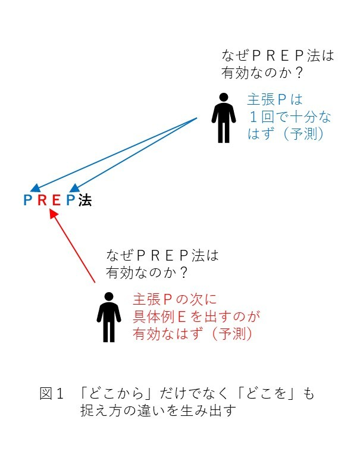
ちなみに、文章でＲ（理由）とＥ（具体例）のどちらを先にもってくるべきかは、一概に決まるものではありません。実はこれは、Ｐ（主張）の抽象度によって変わります。Ｐ（主張）の抽象度が低い場合はＲ（理由）を先に、高い場合はＥ（具体例）を先にするべきです。
どういうことか、説明しましょう。
まず、抽象度が低い主張とは、（聞き手にとって）具体的で分かりやすい主張のことです。例えば
「工場は国内ではなく海外に作るべきだ」
という主張は、多くの人にとって抽象度が低い（分かりやすい）ものと感じられるでしょう。このような分かりやすい主張を耳にした人の頭には、すぐさま
「えっ、なぜそう言えるの？ （国内に作った方が便利で得なのに）」
というような不整合が生じます。聞き手に話を引き続き聞いてもらうには、このような不整合をすぐさま解消する必要があります。従って、Ｐ（主張）の後には不整合を解消するＲ（理由）をすぐ話すべき、ということになります。
それに対し抽象度が高い主張というのは、（聞き手にとって）抽象的で、言われてもピンとこない主張のことです。具体的には、次のような主張を指します。
「『
皆さんには、本書で既にこの主張の意味するところを説明しています。しかし、前情報無しで初めてこの主張を耳にした人には、おそらく主張の意味が全く分からないでしょう。主張の内容にピンときていない状態では、「なぜ」という不整合は生じません。その代わり聞き手の脳内には
「それ（主張）って、どういうこと？ 」
という疑問が生じるでしょう。つまり、抽象度の高い主張を耳にしたとき、聞き手の脳内に生じる疑問は「なぜ」ではなく「どういうこと」 なのです。
このような状態の聞き手には、Ｐ（主張）の後にＲ（理由）を説明するべきではありません。聞き手の脳内に「なぜ」という不整合が生じていないのに、
「なぜなら～」
というふうにＲ（理由）を説明しても、聞き手の頭には内容が全く入ってこないからです。そもそも理由説明とは、聞き手の脳内の不整合を解消する作業に他なりません。不整合が生じていないのに理由説明をされても、聞き手には全く響かないのです。 従ってこのような場合、「Ｐ（主張）→Ｒ（理由）」の順で話すのは効果的ではないことになります。
抽象度の高い主張を聞いた後、聞き手の脳内に生じる疑問は「なぜ」ではなく「どういうこと」です。ここで言う「どういうこと」とは、より正確には
「それって、どういうこと？ （オレにも分かる言葉で説明してくれよ） 」
という疑問です。簡単に言うと、主張をより身近で分かりやすい話に置き換えて説明してもらうことを望んでいるのです。こういう状態の聞き手には、身近な具体例を示すのが効果的です。例えば今の例の場合、
【Ｐ（主張）】
「
【Ｅ（具体例）】
例えば、「あれって何？」「あれはロードローラーだよ」「ロードローラーって何？」「建設現場で、地面を押し固めるための乗り物だよ」のように、疑問の連鎖が生じる
というふうにＰ（主張）の後にすぐＥ（具体例）をもってくると、聞き手に優しい話の構成になります。そして、具体例まで聞き終わると聞き手は主張の意味を理解し、ようやく脳内に
「でも、なぜ疑問の連鎖が生じるんだろう？ （２回連続で同じ『
という不整合を抱きます。つまり、このタイミングで初めて、聞き手の頭には理由説明を聞き入れる態勢が整うわけです。 従って、このタイミングで次のようにＲ（理由）の説明をすると、聞き手は話をすんなり聞いてくれるでしょう。
【Ｒ（理由）】
なぜ疑問の連鎖が生じるかというと、「
以上をまとめると、Ｒ（理由）・Ｅ（具体例）のどちらを先に話すべきかは、Ｐ（主張）の抽象度の高さによるということになります。抽象度の低い主張を聞いたとき、聞き手の脳内には「なぜ」という疑問が生じます。このときは、Ｒ（理由）を先に話すべきでしょう。逆に抽象度の高い主張を聞いたときは、聞き手の脳内には「どういうこと」という疑問が生じます。こういう場合は、Ｅ（具体例）を先に話すべきでしょう。
聞き手の脳内に「なぜ」「どういうこと」のどちらの疑問が浮かぶのかを考えながら、話す順番を決めるべきということです（もちろん同じ主張でも、どちらの疑問が浮かぶのかは聞き手の理解力次第です）。特にＲ（理由）やＥ（具体例）が長文に渡る内容の場合、話す順番を間違えるのは致命的なミスになりかねません。
「なぜか」「どういうことか」というのは、国語の評論文読解でよく問われる質問です。本文の傍線部に対して「なぜか」「どういうことか」と問う設問が、評論文の問題の９割を占めています。そのことから、これら２つの疑問が文章を「読む」際の鍵になっていることを認識していた人は多いかも知れません。ですが実はそれだけでなく、「なぜか」「どういうことか」は、自分で文章を「書く（話す）」際にも意識すべき疑問だったのです。
ちなみにビジネスの世界で「Ｐ（主張）→Ｒ（理由）」の順番が定着したのは、主張の抽象度が低い場合が多いためです。ビジネスでは経営トップの会議（理念の決定など）を除き、基本的に大半の会議で具体的な案件のみを取り扱います。つまり、会議の大半で飛び交う主張は、抽象度の低いものなのです。そのため、「Ｐ（主張）→Ｒ（理由）」の順番が有効な場面が多く、ＰＲＥＰ法が定着したのです。
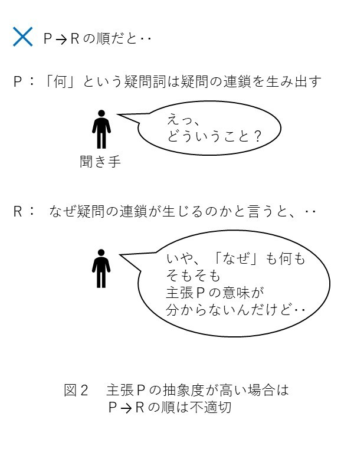
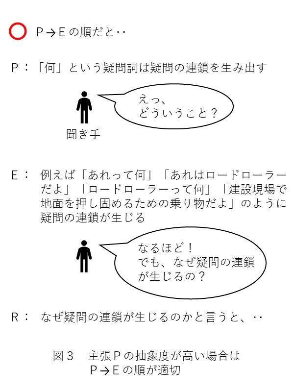
「なぜ」という疑問の場合、他の５Ｗ１Ｈと違って、終わりの見えない疑問の連鎖が生じます。このことも、「なぜ」が予測と不整合に基づいていることと関係しています。
「なぜ」の連鎖が生じるのは、先に生じた「なぜ」の答えに対し、更に不整合が発生するためです。 例として、再び「なぜ空は青いのか」を見てみましょう。この疑問からは、次のような「なぜ」の連鎖が生じます。
「なぜ空は青いのか （空気は透明で太陽光は無色なのに）」...①
→「上空の窒素や酸素によって、太陽光のうち短波長のもの（青、紫）だけが散乱されるから」...❶
「では、なぜ短波長の光（青、紫）だけが散乱されるのか」...②
→「窒素分子や酸素分子の共鳴周波数が紫外領域にあるから」...❷
「では、なぜ窒素分子や酸素分子の共鳴周波数は紫外領域にあるのか」...③
→......
ここで、②の「なぜ」は❶という答えへの不整合から生じています。疑問者の頭の中には、
「光の散乱が起こるなら、それは全ての波長に対して等しく生じるはずだ」
という考えがありました。この考えが、❶に対して不整合を起こしたため、②という更なる「なぜ」が生じたのです。③の「なぜ」も同様に、❷という答えへの不整合から生じています。このように、「なぜ」の答えを知っても、それが脳内の予測と不整合を起こし続ける限り「なぜ」の連鎖は延々と続くのです。
もちろん、この「なぜ」の連鎖に終点はあります。「なぜ」の答えに対して、脳内の予測が何の不整合も起こさなくなれば、それが連鎖の終わりです。
ですが、「なぜ」の連鎖の終わりに辿り着くことは、必ずしも容易なことではありません。連鎖の途中で、どうしても解明できない「なぜ」にぶち当たることもあります。そんなとき「これからあといくつ『なぜ』を解明すれば連鎖が終わるのか」を知ることはできません。従って、全く先行きが見えず、ゴールがどこにあるのか分からない感覚にとらわれることになります。
ところで、「なぜ」の連鎖の仕方は人によっても違います。 例えば「なぜ空は青いのか」の場合、先ほどの例では以下の連鎖が起こりました。
「なぜ空は青いのか」
→「上空の窒素や酸素によって、太陽光のうち短波長のもの（青、紫）だけが散乱されるから」
→「では、なぜ短波長の光（青、紫）だけが散乱されるのか」
ですが、これはあくまで「なぜ」の連鎖の一例に過ぎません。人によっては、次のような連鎖を起こす人もいます。
「なぜ空は青いのか」
→「上空の窒素や酸素によって、太陽光のうち短波長のもの（青、紫）だけが散乱されるから」
→「では、なぜ空は紫色にならないのか」
これは、次のような予測に基づいて生じた疑問です。
「青と紫のうち、より短波長なのは紫だ。短波長の光ほど散乱されやすいのなら、空は青色ではなく紫色になるはずではないのか」
このように、人によって抱く予測が異なると、「なぜ」の連鎖にバリエーションが生じるのです。
ちなみに、空が紫色に見えないことは、人間の目の性能と関係があります。人間の目が認識できる光の波長は３８０～７８０ナノメートルで、これは色で言うと紫～赤に当たります。実は、人間の目はこの波長帯のうち、より中央に位置する色ほど鮮明に捉えられるようにできています。つまり、人間の目は元々紫よりも青を捉えやすいようにできているのです。実際には空では紫の光も多く散乱しています。しかし、人間の目がそれを捉えられないため、人間から見ると空が青く見えるのです。
前章では、「なぜ」の源が予測であると考えると、「なぜ」の異質な特徴を上手く説明できることが分かりました。このことから、「なぜ」という疑問の心が予測に基づいていることはほぼ間違い無いと言えるでしょう。
ところで、「なぜ」が生じるということは、「頭の中の予測」と「目の前の現実」が食い違っているということです。もし目の前の現実が正しいのであれば、間違っているのは頭の中の予測ということになります。このとき、人間は「なぜ」という疑問をきっかけに、自分の脳内の誤った認識を正すことができます。つまり、「なぜ」という疑問には、人間の認識の誤りを矯正する働きがあると言えます。
誤りという言葉を聞くと、思慮の浅さや詰めの甘さが引き起こすものと考える人は多いでしょう。ですが、人間が物事への認識を誤り予測を外してしまうのは、必ずしも思慮の浅さや詰めの甘さによるものとは限りません。実は、人間が物事への認識を誤り予測を外してしまう大きな理由には、次の２種類 が存在します。
１つ目の理由は、観察不足です。人間はあらゆる事柄を予測するとき、過去の観察によって得た知識や法則を用いています。そして、もし観察の時間や回数が不足していると、誤った知識や法則を身につけてしまい、それが予測の過ちに繋がってしまいます。
どういうことか、順を追って説明しましょう。
まず、観察で得た知識・法則を用いて予測するとは、どういうことでしょうか？ 人によっては当たり前に感じられる内容かも知れませんが、予測の本質をつかむ上で大切なポイントですので、丁寧に見ていきましょう。
例えば、ある幼い子供がスポーツの大会で優勝して、ガラスのトロフィーを手に入れたとします。この子は、このガラスのトロフィーを大切に扱うでしょうか？ それとも、乱雑に扱うでしょうか？
その答えは、この子がある法則と知識を有しているかどうかによって変わります。
もしこの子がガラスに関する何の知識や法則も持たず、頭の中が空っぽの状態であれば、トロフィーを乱雑に扱うでしょう。しかし、この子が例えば昔、次のような光景を目撃したことがあれば話は別です。
このような事実を過去に観察していた場合、この子はこれらの情報を統合して
「ガラス製品を落としたら、割れてしまう」...①
という法則を学習しているはずです。そして手にしたトロフィーを観察すれば、
「このトロフィーはガラス製品である」...②
ということが分かるはずです。従って、この子は観察で得た①の法則 と②の知識 を組み合わせることで
「このトロフィーを落としたら、割れてしまうだろう」
という予測 を立てることができます。このような予測が立っていれば、この子はトロフィーを乱雑に扱うことはしないでしょう。乱雑に扱うと落としてしまい、トロフィーが割れてしまう可能性があると判断できるからです。
念のため、もう一例見てみましょう。
ある人が、ハムスターを飼っていました。ある日、この人はハムスターのケージの扉を閉め忘れてしまいました。すると、ハムスターはケージから脱走してしまいました。
それから数年後、この人はリスを飼い始めました。ある日、この人はリスのケージの扉を閉め忘れてしまいました。すると、リスはケージから脱走してしまいました。
このような経験の後、今度はフェレットを飼うことになりました。このとき、この人はケージの扉の閉め忘れに関して、敏感になるでしょうか？ 答えはイエスです。この人は過去の観察事実から、次のように法則を得ているはずです。
また、フェレットを実際に観察すれば、
「フェレットは小動物である」...④
ということも分かるはずです。従って、この人は③の法則 と④の知識 を組み合わせることで
「ケージの扉を閉め忘れたら、フェレットは脱走するだろう」
という予測 を立てることができます。このような予測があるからこそ、この人はケージの扉の閉め忘れに関して敏感になることができるのです。
今の２例で見てきたように、人間は過去に観察したいくつかの事実を統合することで、未来において役立つ可能性のある法則
を見出します（論理学で言う
なお本書では、予測の基になる情報のうち「もし○○すれば、××が起こる」の形で表せるものを法則
、それ以外を知識と呼んでいます。簡単に言うと、
法則という言葉からは、物理などの自然科学の法則を思い浮かべる人が多いかも知れません。ですが、本書ではIf 文の形で表される情報であれば、分野を問わず法則と呼ぶことにします（ちなみに数式で表される物理法則も、実はIf 文の形で表現できます。詳しくは図５をご覧下さい）。
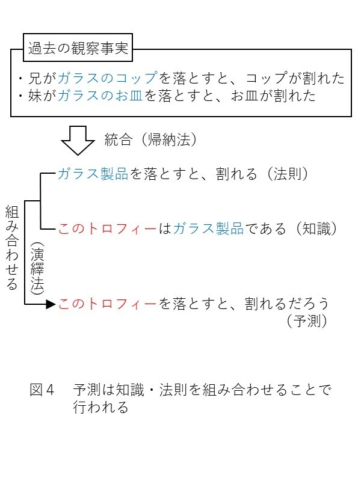
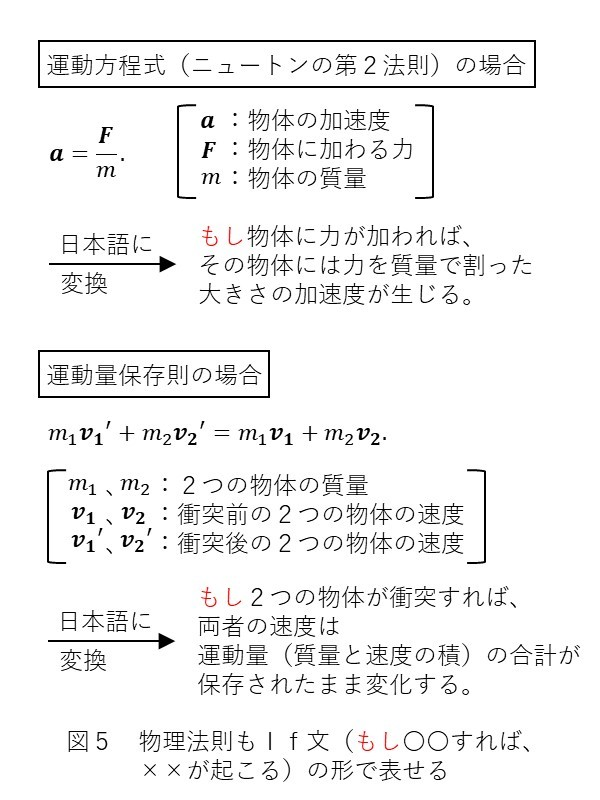
予測の基になる知識や法則は、事実の観察によって得られるものです。従って、事実の観察に問題があると、得られる知識や法則は誤ったものになり、予測は外れてしまいます。ここで言う問題とは、事実を観察する時間が短すぎたり、観察する回数が少なすぎたりすることです。後者は特にｎ数不足 （サンプルサイズ不足）と呼ばれます。
ｎ数不足の例としては、次のようなものが考えられます。
ある人が町中で金髪の青年とすれ違った際、その青年から唾をはきかけられてしまいました。またその数日後、今度は別の金髪の青年の近くを歩くと、その青年からカツアゲされてしまいました。これらの経験から、この人は
「世の中の金髪の青年は全て悪人である」
「金髪の青年に近づくと、ロクなことにならない」
と考えるようになりました。
しかし、これらの知識・法則は誤りです。 世の中の全ての金髪の青年が悪者というわけではありません。中にはもちろん優しい人たちも沢山います。
この人が誤った知識や法則に陥ってしまったのは、ｎ数不足 のまま判断を下してしまったからです。この人は、悪い金髪の青年に偶然２連続で出くわしてしまっただけです。この偶然の２事例だけから判断を下してしまったために、誤った知識や法則に陥ったのです。ｎ＝２ではサンプルサイズとしては不足していたわけです。
このような誤りに陥らないためには、知識や法則を結論づける前に、十分な観察回数（ｎ数）が必要です。１度や２度の出来事で決めつけず、長い目で見て物事を判断する必要があります。
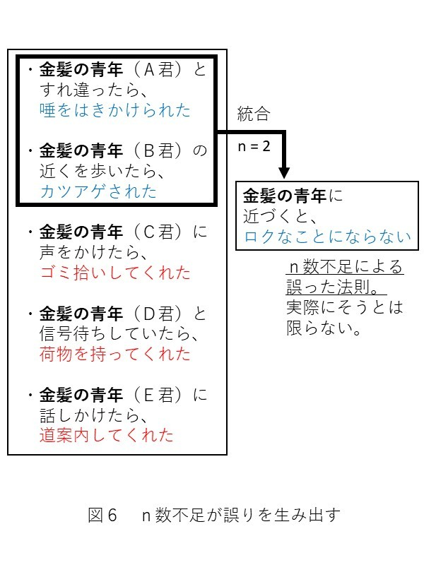
人間が物事への認識を誤り予測を外してしまう理由の２つ目は、
代表的な仮象としては、「地球は動いていない（天動説）」というものがあります。私達人間は、日常生活の中で、地球が動いていることを実感することは決してありません。もちろん知識としては、実際には地球が動いていること（地動説）を知っています。
しかし、これはあくまで学校で教科書を通じて学んだからに過ぎません。コペルニクスが地動説を提唱するより前の時代の人々にとって、「地球は動いていない」というのは疑うこと無き実感だったはずです。つまり、中世以前の人々は、天動説という仮象 にとらわれていたことになります。
このような仮象にとらわれると、人間は物事を正確に予測できなくなります。例えば、「地球は動いていない」という仮象にとらわれている限り、宇宙の星々の動きを正確に予測することはできません。従って、私達人間は仮象を見破り、真実や真理を見つけ出す必要があります。
人間が仮象にとらわれるのは、観察のｎ数不足の問題ではありません。 例えば地面を何回注意深く観察したところで、「地球は動いていない」としか感じられません。つまり、ｎ数をどれだけ増やしたところで、誤った知識しか得られないのです。
ではなぜ人間が仮象にとらわれるのかというと、それは人間の感性に限界があるからです。 人間には五感（視覚、聴覚など）をはじめとする感覚が備わっていますが、それらの能力には限界があります。そして、人間は感性の限界を超えた事柄を捉えようとすると、必然的に仮象に陥ってしまいます。
例として、「地球は動いていない」という仮象について見てみましょう。人間がこの仮象に陥る原因となっているのは、耳の奥にある
耳石器とは、簡単に言うと、乗り物などに乗ったときにその動きを感知する器官です。例えば、自分が乗っているエレベーターが動き始めたときに「あ、動き始めたな」と感じられるのは耳石器のおかげです。人間は、耳石器という体内のセンサーによって、たとえ目を瞑っていても自分を乗せた乗り物が動いていることを理解できるのです。
このように耳石器は優れた感覚器官ですが、そんな耳石器にも弱点があります。耳石器は、自分が乗っている乗り物が
「等速運動（常に一定の速度の運動）」
をしているとき、その乗り物が動いているのか否かを識別できないのです。 例えば、あなたが電車に乗っていたとしましょう。電車は駅から出発し始めるとき、速度ゼロの状態から加速を始めます。このようなとき、あなたは「電車が動き始めた」という感覚を耳石器によって得ることができます。
しかし一旦電車が最高速度に達し、そこから等速運動に移行すると、もはや「電車が動いている」という感覚は感じられなくなるでしょう（特に新幹線の場合、上下方向の揺れも少なく、あたかも停止した空間の中にいるように感じられるでしょう）。つまり電車が等速運動をしているときは、電車が動いているのか、それとも停止しているのかを感覚的に区別できなくなるのです。
もしあなたが客室で居眠りをしていて、電車の移動中に目を覚ましたら、自分が乗り物で移動中だったことをすぐには思い出せないでしょう。あたかも静止した大地の上にいるかのように錯覚してしまうからです。
これと同じことが、地球にも当てはまります。地球は太陽の周りを円運動（正確には楕円運動）しています。つまり、私達は地球という乗り物に乗って宇宙を動いていることになります。地球の公転速度は秒速約30 キロメートルという超スピードですが、常にほぼ等速 を保っています（太陽への向心加速度はわずか６ミリメートル毎秒毎秒に過ぎません）。
従って、地球が猛スピードで動いているにも関わらず、私達の耳石器はそのことを認識できません。あたかも地球が静止しているかのように錯覚してしまうのです。 私達人間がいくら注意深く地面を観察しても地球が動いていると感じられないのは、そのためです。
人間が陥る仮象は、耳石器によるものだけではありません。五感をはじめとするあらゆる感覚器官の能力の限界が、私達を仮象に陥らせます。視覚 もその１つです。
例えば雨が降った後、道路の上には水たまりができます。この水たまりは、数時間から数日経てば、綺麗さっぱり消えて無くなります。この現象は、どう見なすべきでしょうか？ もちろん私達現代人は、正解を次のように答えられます。
「水たまりの水が蒸発して水蒸気になり、空気中へ飛んで行った。だから、水たまりが無くなった」
ですが、これは全く当たり前のことではありません。なぜなら、水蒸気の存在は私達人間の視覚では認識できないからです。
水蒸気の粒（水分子）は、約０．３８ナノメートルという非常に小さなものです（１ナノメートル＝１００万分の１ミリメートルです）。これは人間の目の分解能を遥かに超えています。つまり、私達人間は視覚という感性の限界ゆえに、水蒸気の存在を認識することができないのです。 私達現代人が水蒸気の存在を当たり前のように知っているのは、あくまで小学校の理科の授業で習うからにすぎません。
では、まだ科学の発展していない大昔の人々の目には、この水たまりの水が消えるという現象はどう映っていたでしょうか？ もちろん、水蒸気の粒が見えないのですから、水がその場で消滅するように見えていたはずです。つまり、大昔の人々は
「水は時間が経つと、その場で消滅してしまうものだ」
という仮象にとらわれていたことになります。
このように、人間は感性の限界 を超える物事を捉えようとすると、必然的に仮象 に陥ってしまいます。これは、単なるｎ数不足による誤りとは根本的に次元の違う問題なのです。
仮象は感性の限界により生じるものですから、人間が仮象にとらわれてしまうのは仕方のないことです。五感などの感覚器官をいくら研ぎ澄ませても、仮象を見破ることはできません。
ですが、現代人は既に
「地球は動いていない（天動説）」
「水は時間が経つと、その場で消滅する」
といった知識や法則が誤りであることを知っています。これは、過去にこういった知識や法則が仮象であることを見破り、後世に伝えてくれた人がいるからです。先人達が仮象を見破り、真実や真理を突き止めてくれたからこそ、私達現代人はこういった仮象にとらわれずに済んでいるのです（ここで言う真実とは「真の事実（知識）」、真理とは「真の
先人達が仮象を見破ったということは、人類には仮象を見破る
どういうことか、例を通して見ていきましょう。
まずは、人類がいかにして天動説（仮象 ）を見破り地動説（真実 ）に到達したのかを見てみましょう。
人類が天動説という仮象を見破るきっかけになったのは、中世の天文学者ニコラウス・コペルニクスの
「なぜ火星は逆行するのか」
という疑問です。
当時のヨーロッパの天文学者は、「地球以外の星が、静止した地球の周りを回っている」という天動説を基に、天体の動きを予測していました。これは、人間が日常生活の中で地球が動いていると感じられないことを考えれば、当然のことです。しかし、この天動説を基に考えると、不可解な動きをする星がいくつかありました。その１つが火星です。
火星は地球から観測すると、地球を中心として単純な円運動（公転）をしているように見えます。火星は西の空から東の空へ向かって移動し、約２年かけて元の位置に戻ってくるように見えるのです。しかしよく観察すると、２年の間に約２か月だけ、火星が通常の進行方向（西→東）から逆行しているように見える期間があります。このような火星の動きが「火星の逆行」と呼ばれるものです。
もし本当に火星が地球を中心に公転しているだけなら、このような逆行現象が観測されるのは不自然です。そのためコペルニクスは
「なぜ火星は逆行するのか」
という疑問を抱き、それを解明したいと思うようになりました。
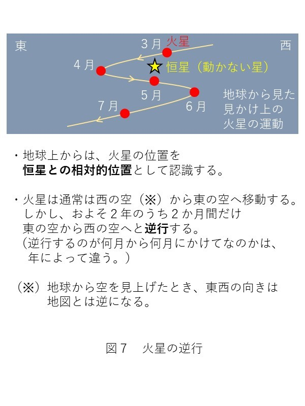
このコペルニクスの疑問の答えを、当時のキリスト教の聖職者たちは「
まず、地球を中心に大きな円を描き、これを従円と呼ぶことにします（図８）。次に、この従円上に点Ｐをとり、この点Ｐを中心とした小さな円を描きます。この小さな円のことを周転円と呼ぶことにします。ここで、火星は周転円上を公転しており、なおかつ周転円の中心Ｐは従円上を公転していると考えます。すると、時期によっては、地球から観測すると火星が逆行しているように見えると言うのです。
確かに、このモデルを使えば火星が逆行する理由を説明できます。しかし、この説明では
「なぜ火星は点Ｐの回りを公転するのか （点Ｐには何も無いのに） 」
という点を上手く説明できません（点Ｐはあくまでも人間が形式的に定めた点であり、そこに公転の中心となる星が存在するわけではありません）。従円と周転円を用いたモデルは、複雑な上に不自然なのです。そのため、コペルニクスはこのモデルによる説明に素直に納得できずにいました。
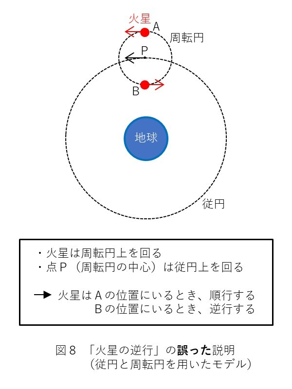
そこでコペルニクスが編み出した考えが、
「地球も火星と共に、太陽の周りを公転している。そう考えれば、火星の逆行現象をシンプルかつ自然に説明できる」
というものです。図９を見て下さい。太陽の周りを地球が公転しており、その更に外側で火星が公転しています。ただし、地球の公転運動の方が、火星よりも速度が大きいものとします。このとき、地球は周期的に火星を内側から追い抜くことになります（この周期が約２年です）。すると、地球が火星を追い抜くタイミングで、地球から観測すると火星があたかも逆行しているように見えるのです。
このモデルなら、地球から見て、火星が地球を中心に公転しているように感じられる説明もつきます。つまり、地球が動いていると考えれば、「従円と周転円」という複雑で不自然な考え方を用いずに、火星の運動を明快に説明できるのです。
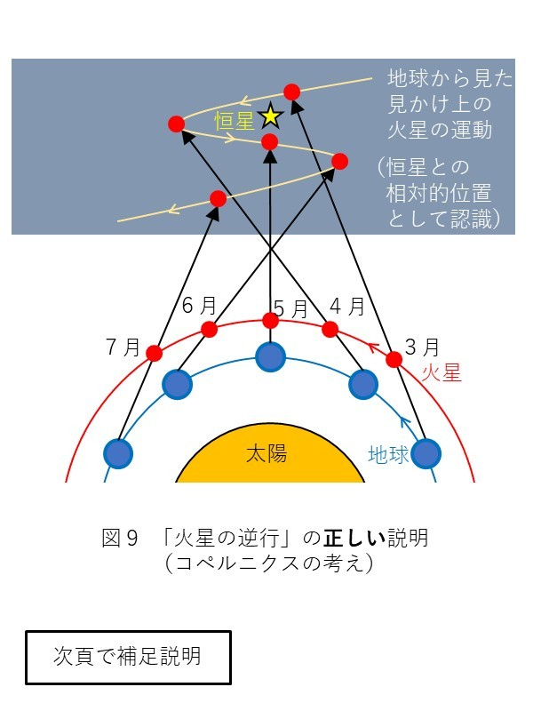
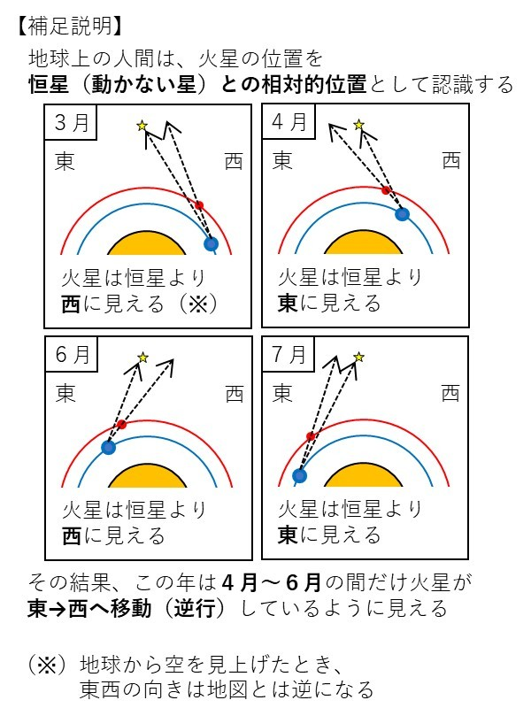
こうしてコペルニクスは、「なぜ火星は逆行するのか」という疑問をきっかけに、天動説が誤りであることを見破り地動説を導きました。つまり、「なぜ」という疑問の心が仮象を見破り、隠れた真実を見つけたのです。 「なぜ」と問う理性の力が感性の限界を超えた事例と言えるでしょう。
火星の逆行の例は話のスケールが大きすぎて、あまりピンとこなかった人もいるかも知れません。そこで、もう少し身近に感じられる例として、水蒸気についても見てみましょう。
私達大人は、水蒸気の存在を当たり前のように知識として知っています。これは、小学校の理科の授業で水蒸気のことを学習するためです。では、まだ学校でそのことを習っていない子供は、自力で水蒸気の存在に気づくことはできないのでしょうか？ そんなことはありません。教科書で知識として学んでいなくても、「なぜ」の力 を使って自分で真実を見つけることができます。
例えば、ある少年がお母さんからコップに水を入れてもらったとします。少年はこの水を後で飲もうと思い、ゴミがコップの中に入らないようにラップをして、友達と遊びに行きました。それから数時間遊んだのち、少年は家に帰りました。少年は、水を入れてから数時間も経ったので、コップの中の水はもう無くなっているのではないかと予測しました。過去に水たまりの水が時間と共に減るのを見た経験から、
「水は時間が経つと、その場で消えて無くなる」
という法則を脳内に有していたためです。
しかし、少年の予測に反して、コップの中の水は殆ど減っていませんでした。そのため、少年は
「なぜコップの水は減らなかったのか （水は時間が経つと消滅するはずなのに）」
という疑問を抱きました。そして、この謎をどうにかして解明したいと思いました。
さて、少年はこの謎を解き明かすことができるでしょうか？ もちろん、親に聞けばすぐに正解（水蒸気の存在）を教えてもらえるでしょう。ですが、親に答えを聞かなくても、手がかりさえつかめば自力で正解に辿り着くことができます。その手がかりとは、ラップについた水滴です。
コップに水を入れ、ラップをかけた状態で数時間放置すると、ラップの内側にはポツポツと水滴が付着します。このことから少年は、コップの水がラップまで移動したのではないかということに気づきます。また、水滴はラップとコップの境界に集中しているわけではなく、ラップ全体にポツポツと均等に付いています。このことから、水はコップの壁面を登っていったのではなく、空気中を伝わっていったことが分かります。
しかし、いくらじっと観察しても、実際に水滴が空気中を漂う様子は目視では確認できません。従って、水は目に見えないくらい小さな粒となって空気中に飛び出しているのだということが分かります。そう考えれば、以下のように他の観察事項への辻褄も合います。
従って自分の考えが正しいことが分かり、
「水は時間が経つと、その場で消えて無くなるのではなく、目に見えない小さな粒（＝水蒸気）となって空気中へ飛び出していく」
という真理 に至ることができるわけです。
この水蒸気の例でも、仮象を見破り隠れた真理を見抜く鍵となっていたのは「なぜ」という疑問です。 「なぜコップの水は減らなかったのか」という疑問をきっかけに、感性（視覚）の限界を超えた水蒸気という存在に気づくことができたのです。
単なるｎ数不足から生じる誤りには、観察の回数を重ねることで気づくことができます。一方仮象は感性の限界から生じるものですから、いくらｎ数を増やしても見抜くことはできません。 仮象を見破るには、「なぜ」という理性に頼らざるを得ないのです。従って人が「なぜ」と問うのは、究極的には仮象を見破り、隠れた真実・真理を見抜くためだと言えます。
※ ちなみに、人間の認識能力について「感性」「理性」の２つだけで論じるのは、哲学の世界では必ずしも一般的ではありません。例えば、カント哲学では人間の認識能力を「感性」「
人間が「なぜ」という疑問を基に行なうのは真実・真理の間接証明であり、直接証明ではありません。例えば、コペルニクスは地球が動いているところを直接見たわけではありません。あくまでも、天動説を仮定すると不自然な点（不整合）が生じることから、地動説が正しいことを間接的に示しただけです。
水蒸気の例にしても、「目に見えないほどの小さな水滴」を直接確認したわけではありません。そういった存在を仮定しないと様々な観察事実に説明がつかないことから、水蒸気が実在することを間接的に証明しただけです。
こういう話を聞くと、次のように思う人もいるでしょう。
「どうせ直接証明ができないなら、人間には『なぜ』と問う能力は不要なんじゃないか？ 物事は直接確かめないと意味が無い。だから、『なぜ』と問うよりも直接観測の技術を発達させる方がよっぽど有意義だ。
宇宙に飛び出して地球を直接観測する技術を発達させれば、地球が動いていることを直接証明できる。水蒸気（水分子）だって、目に見えない小さな粒を観測する装置を作れば、直接確認できるようになる。だから、観測技術を発達させることさえ考えていれば、『なぜ』という疑問は必要無い」
この意見は、一見すると理にかなっているように思えるかも知れません。ですが、このような考え方は誤りです。観測技術があれば「なぜ」が不要なのではありません。むしろ「なぜ」という疑問が無いと、そもそも観測技術の開発へのモチベーションが生まれません。
例えば、天動説がまだ支配的だった時代の人々は、「宇宙から地球を直接観測してみたい」と思っていたでしょうか？ 彼らは、決してそうは思わなかったでしょう。なぜなら、当時の人々は宇宙から地球を観測することに対して、何の面白味も見出せなかったはずだからです。
当時の人々にとって、「地球は静止している」というのが当たり前の常識でした。彼らは、まさか地球が動いているなどとは思いもしませんでした。従って、当時の人々は
「宇宙に飛び出して地球を観測したって、どうせずっと静止している様子が見えるだけだ」
と予測していたはずです。つまり、彼らは特に面白い情報が得られるとは考えておらず、宇宙から地球を見るモチベーションが無かったのです。
そんな人間のモチベーションを変えたのが、「なぜ火星は逆行するのか」という疑問です。 コペルニクスがこの疑問を基に、従来の天動説に加え、地動説という新たな考え方を示しました。その結果、
の２つが両立し、しかも間接証明によって後者の方が正しい可能性が高いという状態が生まれました。しかし、地球上に留まっていては、人類は両者のどちらが正しいのかを直接確認できません。そのことが人類に
「宇宙に飛び出して、地球を直接観測してみたい」
という好奇心をもたらしたのです （実際、コペルニクスが登場するまで、天文学には約１０００年間ほとんど何の進展も見られませんでした。しかし、コペルニクスの「なぜ火星は逆行するのか」をきっかけに、人類の宇宙への好奇心は急激に高まり、宇宙への理解は急速に進展しました。「なぜ」という疑問には、人間の好奇心を刺激し、約１０００年もの暗黒時代をあっと言う間に塗り替えるほどの力があるのです ）。
同様のことは、水蒸気の例などに関しても言えます。そもそも人間が
「目に見えない小さな粒を観測する装置を作りたい」
と思うのは、「なぜ」を通してそのような小さな粒（水分子など）が存在する可能性を知ったからです。本当にそのような粒が存在するなら見てみたいという好奇心が、観測装置の発明への熱意を生んだのです。
目に見えない粒が存在する可能性を知る前は、人間にとって目に見える世界が全てでした。そんな時代の人々は、そのような装置を作ったところで何か面白いものが見られるとは考えなかったでしょう。つまり、観測装置発明への人類のモチベーションを生み出したのは、「目に見えない粒が存在する可能性を知ったこと」だったと言えます。 これは、ＳＰＭ（走査型プローブ顕微鏡）が原子を発見したのではなく、原子が存在する可能性を知ったからＳＰＭが開発されたことからも分かります。
そもそも、
といったものを開発するには、莫大な時間と労力が必要です。従って、技術開発の先に何か面白いものが見つかる可能性が無ければ、そのような技術をわざわざ開発しようとは思わないでしょう。それに、そういった技術が歴史的観測に繋がるという期待が無ければ、技術開発にお金を投資してくれる人も現れないでしょう。
つまり、予め「なぜ」による間接証明を通して面白いものが観測される可能性を知っておかなければ、観測技術は進歩しないのです。観測技術があれば「なぜ」による間接証明が不要なのではなく、「なぜ」による間接証明があるから観測技術が進歩するわけです。
それに、観測技術がいくら発達したところで、「なぜ」という疑問が不要になるわけではありません。観測技術の発達は、人間の感性の限界を無くしてくれるわけではありません。あくまでも感性の限界を伸ばすだけあり、人類が仮象に陥る可能性が消えるわけでは無いのです。
例えば、人類はＳＰＭ（走査型プローブ顕微鏡）を発明することで、原子１個１個を視覚的にとらえられるようになりました。元々人間の目ではとらえられなかった物を見ることができるようになったのですから、これは人間の元々の視覚の限界を超えたことに相当します。
しかし、それでも視覚の限界が無くなったわけではありません。原子１個１個を見ることはできるようになっても、それよりも小さいサイズの物はまだ視覚的にとらえられないからです。ＳＰＭを用いて観察を行なっていても、原子より小さな世界で何が起こっているのかをとらえることはできません。そういう意味で、人類にはまだ新たな仮象に陥る可能性が残っていると言えます。
このことは、今後いくら優れた顕微鏡が発明されたとしても同じです。顕微鏡の分解能をいくら上げたところで、性能には限界があります。倍率を無限倍にできる顕微鏡など、作ることはできません。従っていくら顕微鏡が進化しても、仮象に陥る可能性がゼロになることはありません。
天体観測についても、同様のことが言えます。例えば、太陽系の外に出て、完全な静止点から地球を観測する技術が開発されたとしましょう。一見すると、このような技術が開発されれば地球の動きを１００％ 客観的に把握できるように思えるでしょう。しかし、本当にそうでしょうか？ そもそも、人類が天動説という仮象にとらわれていたのは、
「地球にいながら地球のことを見ていた」
からです。では宇宙へ飛び出せばそのようなことは起こらないかと言うと、そうとも限りません。私達は、宇宙空間の外には何も無いと考えがちです。しかし、実際には宇宙空間の外には、私達には想像もつかない世界がまだ広がっている可能性があります。そのような宇宙空間の外の世界からすれば、私達人間が宇宙空間で地球を観測するというのは、
「宇宙にいながら宇宙のことを見ている」
ことになります。つまり、かつて地球上で天動説にとらわれていたのと同様に、宇宙に出ても別の仮象にとらわれる可能性があるのです。これは、人間が地球からどれだけ離れた空間へ行けるようになっても変わりません。
以上のように、たとえ観測技術が発達したところで、人類は仮象から逃れられるわけではありません。人類はいつの時代であっても仮象と戦い続ける必要があります。間接証明だからといって「なぜ」という武器を手放すことはできないのです。
これまでの説明では、地動説や水蒸気の存在のような自然科学に関する話ばかりを取りあげてきました。そのことから、皆さんの中には、仮象は自然科学以外の分野には無縁のものだという印象を持った人もいるかも知れません。
ですが、それは違います。仮象は、自然科学だけのものではありません。どんな分野に携わる人であっても、仮象と戦わなくてはならない場面は存在します。
例えば、名探偵が真犯人を見つける際にも、「なぜ」を使って仮象を見破っています。警察の捜査では、一見するとＡさんが犯人であるかのような痕跡（指紋など）が現場から沢山見つかります。このことから、警察はＡさんを犯人であると断定します。
しかし、名探偵が現場をよく調べてみると、Ａさんを犯人だと考えると不自然な点（不整合）が見つかります。そこで名探偵は「なぜ」という疑問を抱き、不整合の解消に努めます。すると「Ａさんが犯人である」というのは仮象であり、真犯人はＢさんだと判明するのです。このように、名探偵は「なぜ」という疑問を基に仮象を見破り、真実を導き出します。
ちなみに警察が「Ａさんが犯人である」という仮象に陥ってしまったのも、人間の感性の限界と関係しています。事件が起こった時刻に現場で何が起こっていたのかは、実際にその時刻に現場を見ていないと分かりません。しかし、事件後に初めて現場を訪れた警察にはそれは不可能です。人間の感性では、ある場所で何が起こったのかを過去に遡って見ることはできないのです。
従って警察は、現在の現場の限られた痕跡から事件当時のことを推測することしかできません。そのため、誤った結論（仮象）に陥ってしまうのです。
また、ビジネスの場にも仮象は潜んでいます。例えば、あるハンバーガーショップが客にアンケートをとったところ、
「野菜を中心としたヘルシーなメニューが欲しい」
という要望がありました。そこで、このショップはヘルシーさを前面に出した新商品を作りました。しかし、いざその新商品を発売してみても、全く売れませんでした。客はヘルシーな新商品ではなく、従来の脂っこいメニューを結局選んだのです。
なぜこのようなことが起こったのでしょうか？ それは、ショップが「アンケートに書かれているのがお客様の真の声だ」という仮象にとらわれたからです。実は、客がアンケートにヘルシーなメニューが欲しいと書いたのは、店で脂っこいメニューを食べ終わった後
「もう脂っこいものはいいや」
という気分のときにアンケートを書いたからです。確かに、客は本心でアンケートを書きました。しかし、アンケートを書いたときの気分は、店に入って注文をするときの気分とは一致していなかった、というのが真実だったのです。
ショップが仮象に陥ってしまったのは、人間の心理状態が感性の限界を超えた存在であることに起因しています。客が本当はどんな心理状態でアンケートを書いているのかなんて、外からいくら観察しても分かりません。その人の脳内でどんな電気信号が生じて、どういう心理状態が生まれているのかは、脳を実際に覗いてみないと分からないからです。
ですがもちろん、そんなことはできません。人間の脳はブラックボックスであり、その中で生じる心理状態は、五感をはじめとする感性では捉えきれないのです。
このショップが仮象を見破り、真実を見つけるためには、単にアンケートを書いているときの客の様子を観察するだけでは不十分です。客の一連の行動から、不整合を見つける必要があります。例えば
「このお客様は、脂っこいメニューを注文していた。だから、どちらかと言うと脂っこいメニューが好みのはずだ。それなのになぜ、食後のアンケートではヘルシーなメニューを要望したのだろうか」
といった具合に、です。新商品を開発する前に「なぜ」の力で真実を見抜いておかなければ、的外れな商品開発をすることになってしまいます。
このように、自然科学以外の分野においても、人間が仮象にとらわれる場面は沢山あります。仮象を見破る力が必要なのは、自然科学に携わる人だけではありません。「なぜ」を用いて真実・真理を突きとめる力は、人類全員にとって必要となりうるものなのです。
前章までは、「なぜ」の本質を探ってきました。以下ではいよいよ、これまでの話を基に、「なぜ」を追究するとはどういうことかについて考えていきます。
これまでの話を総合すると、「なぜ」を通して真実や真理を得るためには、次の３つが必要だと考えられます。
（１）元々正確性の高い知識・法則を有していること
（２）不整合を見過ごさないこと
（３）一見無関係な物事からヒントを得ること
どういうことか、１つずつ見ていきましょう。
「なぜ」という疑問から真実・真理に辿り着くためにまず必要なのが、元々正確性の高い知識・法則を有していることです。
「なぜ」という疑問は、頭の中の予測と目の前の現実が不整合を起こすことで生じます。このとき頭の中の予測は、過去に観察から得た知識・法則を基に生み出されます。もちろん目の前の現実と不整合を起こすのですから、この知識・法則は誤ったものです。
ですが、予測の基になる知識・法則は誤りではありつつも、ある程度正確性の高いものである必要があります。全く的外れの知識・法則からは、真実や真理へ迫ることはできません。なぜなら、真実や真理に辿り着くためには
の両者を手がかりにする必要があるからです。
どういうことか、例を見てみましょう。
コペルニクスが「なぜ火星は逆行するのか」という疑問を抱く前、元々脳内に有していた法則は
「火星は地球の周りを西から東へ公転する」...①
というものでした。これは、天体観測の蓄積により導き出されたものです。そして、この法則から、「火星は次は東へ動くはず」という予測が立ちました。しかし、目の前の現実は
「火星は２年の間に２か月だけ逆行する（東から西に移動する）」...②
というものでした。両者は矛盾しており、一見すると①の法則は完全に誤りのように思えます。しかし、①は全くの的外れというわけではありません。 なぜなら、火星が逆行するのは２年（※）の間にわずか２か月だけであり、それ以外の22 か月においては確かに
「（地球から見て）火星は地球の周りを西から東へ公転する『ように見える』」
からです。そして、
の両者 に辻褄の合う説明として、
という真実 が導かれます。つまり②（目の前の現実）だけでなく、①（元々有していた法則）の部分的な正しさ（＝❶）も、真実を導き出すために必要不可欠な要素となっているのです。
もし、最初に脳内に有していた法則が的外れのものだったらどうなるでしょうか？ 例えばある青年が、火星が西の空から東の空へ移動するのを２～３回見て、
「火星は西から東へ一直線に進む」...③
と考えたとします。つまり、火星は円運動（公転）して元の位置に戻ってくるのではなく、直線運動でひたすら同じ方向に突き進むものと考えたわけです。これはｎ数不足に基づく誤った法則です。ですが、青年はこの的外れな法則を信じてしまいました。そして、ある日たまたま
「火星が逆行している（東から西へ進む）」...④
のを見て、
「なぜ火星は逆行したのか （西から東へ一直線に進むはずなのに）」
という疑問を抱いたとしましょう。このとき、青年は真実へ辿り着くことはできません。なぜなら、
の両者に辻褄の合う説明など、与えようがないからです。 真実である
に辿り着くためには、少なくとも「公転」 という情報が必要です。しかし、今回の③④には「公転」という情報が入っていません。真実に辿り着くための大きな手がかりが脱落しているのです。従って今回のケースでは、単に③（元々有していた法則）が誤りであることしか分かりません。 青年は
「ふーん、火星は西から東に一直線に進むものだと思っていたけど、そうとも限らないんだなあ」
と思うだけでしょう。
（※）より厳密には、地球が火星を追い越すのは約７８０日ごとです。
ラップの水滴から水蒸気の存在を見抜くとき、元々脳内に有していた法則は
「水は時間が経つと、その場で消滅する」...①
というものでした。これは、水たまりの水が無くなる現象の観察から得たものです。この法則から「コップの水も時間が経つと消滅するだろう」という予測が立ちました。しかし、目の前の現実は
「コップの水は殆ど減らなかった」...②
というものでした。両者は矛盾しており、一見すると①の法則は完全に誤りのように思えます。しかし、①は全くの的外れというわけではありません。 なぜなら、水が減らないのはラップなどでカバーされている場合だけであり、それ以外の場合は確かに
「水は時間が経つと、その場で消滅する『ように見える』」
からです。そして、
の両者 に辻褄の合う説明として、
という真理 が導かれます。つまり②（目の前の現実）だけでなく、①（元々有していた法則）の部分的な正しさ（＝❶）も、真理を導き出すために必要不可欠な要素となっているのです。
もし、最初に脳内に有していた知識・法則が的外れのものだったらどうなるでしょうか？ 例えば幼い少年が、水たまりの水を野良猫がこっそり飲んでいるのを２～３回見て、
「水たまりの水が無くなるのは、野良猫が水を飲むからだ」...③
と考えたとします。もちろん、これはｎ数不足による誤った法則です。実際には野良猫が水を飲まなくても、水たまりの水が無くなることは多々あります（というより、野良猫が原因ではないケースの方が圧倒的に多いでしょう）。ですが、少年はこの的外れな法則を信じてしまいました。
そして、ある日たまたま、ラップをかけたコップの水が減らなかったのを目撃したとします。このとき、少年は③の法則を基に、
「ラップがかけてあって野良猫が水を飲めないのだから、コップの水が減らないのは当然だ」
と考えるでしょう。この考えではそもそも不整合は生じず、「なぜ」という疑問が生じません。従って、水蒸気の存在という真実に気づくことは、非常に難しいでしょう。
以上の２例で見たように、「なぜ」という疑問を抱いて真実・真理に辿り着くためには
の両者を手がかりにする必要があります。 従って、予測を立てる前に脳内に有している知識や法則は、誤りではありつつも、ある程度正確性の高いもの である必要があります。的外れな知識・法則からいくら予測を立てても、真実・真理へは迫れないのです。
（このように、一見矛盾する２つの事柄から、両者に辻褄の合う説明として真実・真理を導く手法は、論理学では
正確性の高い知識・法則を得るためには、物事をよく観察する必要があります。的外れな知識・法則に陥ってしまうのは、多くの場合ｎ数不足によるものだからです。特にビジネスでは、ｎ数不足で見切り発車をすることが多々あります。その結果、上手くいかなかったときに「なぜ」を追究しようとしても、何も得られないという事態がよく生じます。
例えば、ある工場で金属の焼結部品（自動車の部品など）を生産していたとします。ユーザーからは、より硬度の高い部品を求める声が多く寄せられました。そこで、どのような焼結手法をとれば高硬度の部品を作れるのか、工場では試行錯誤が行われました。そして、10 通りの焼結パターンを試したところ、最高温度から一気に急冷した２つの試作品で高硬度を実現できました。そのため、この工場は急冷する条件で部品の生産を開始することにしました。
ところが、いざ部品の生産を始めてみると、硬度不足の不良品が続出してしまいました。そこで工場は、
「なぜ硬度不足の不良品が続出したのか」
という疑問を掲げ、原因を徹底的に分析しようとしました。しかし、いくら分析をしても、不良が生じた原因について何の手がかりも得られませんでした。
この工場が「なぜ」を追究しても何も得られなかったのは、そもそも予測の基となる法則がｎ数不足による的外れなものだったから です。この工場は10 通りの焼結パターンのうち上手くいった２例を基に
「最高温度から一気に急冷すると、高硬度の製品を得られる」
という法則を見出しました。ですが、急冷で上手くいくというのは、実はこの２例だけで起こった単なる偶然でした。実際には１００回急冷しても、98 回は上手くいきません。つまり、この法則はｎ数不足による的外れな法則だったわけです。 このような真理にかすりもしない法則を基に「なぜ」をいくら追究しても、得られるものは何もありません。真理に辿り着くためには
の両者を手がかりにする必要がありますが、的外れな法則には部分的な正確さが一切存在しないからです。今回の場合、そもそも急冷というやり方自体が完全な誤りなのですから、
「急冷しても駄目だったのは、急冷のスピードがマズかったんじゃないのか」
などと要素を挙げて議論しても、真理には絶対に辿り着けないのです。
このように、ビジネスの現場では「なぜ」を追究する以前に、ｎ数に問題があることが多いです。ｎ数不足の状態で見切り発車して、問題が起こってから「なぜ」を追究しようとしても、真実・真理には近づけません。まずは現場をよく観察し、ある程度正確性の高い知識・法則を得てから予測を立てる必要があります。
もちろん、現場をいくら緻密に観察しても、１００％ 正確な知識・法則を得ることはできません。人間の感性には限界があり、仮象（誤り）にとらわれてしまうためです。このようなことを聞くと、いくら観察しても誤りに陥るなら、観察に力を注ぎたくないと思う人もいるかも知れません。
ですが、感性の限界まで観察しなければ、真実・真理に近づけるような正確性の高い知識・法則は得られません。つまり、最初から１００％ 正しい道を歩むことはできないのです。逆説的に思えるかも知れませんが、真実や真理に近づくためには、感性の限界まで観察をして一度思い切り誤りに陥る必要があります。
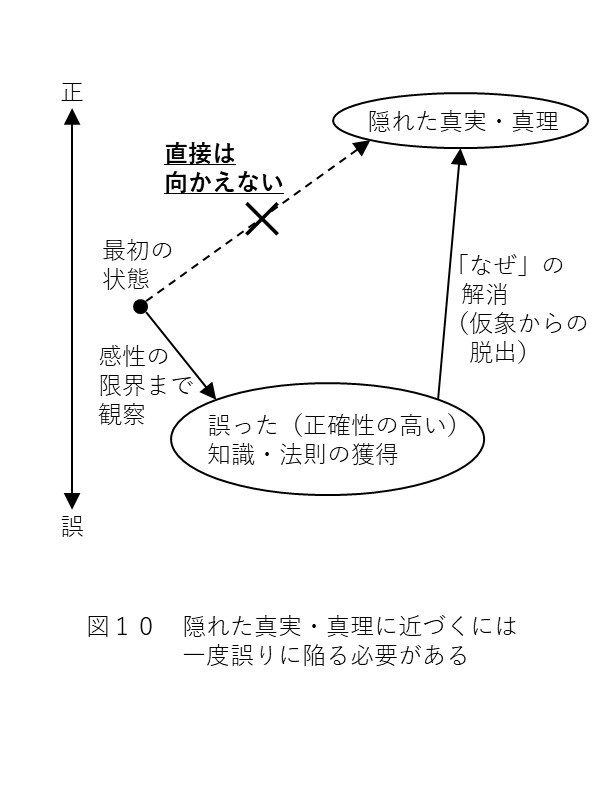
「なぜ」という疑問から真実・真理に辿り着くのに必要な事柄の２つ目は、不整合を見過ごさないことです。当たり前のようですが、感性の限界まで観察して得た知識・法則があっても、不整合を見つけない限りそもそも「なぜ」という疑問が生じません。「なぜ」という理性で感性の限界を超えるには、まずは観察によって不整合を見つけることが必要です。
不整合を見過ごさないためにまず避けるべきことは、他人から得た知識や法則を鵜呑みにすることです。 他人から得た知識や法則を何の疑いも無く信じこむと、自ら観察することを怠るようになります。すると、目の前に不整合が転がっていても、それを見過ごしてしまいます。
例えば、中世ヨーロッパのキリスト教の聖職者たちは、天動説こそが宇宙の正しい姿を表しているとしていました。ですが、もしコペルニクスが彼らの言うことを何の疑いも無く信じていたら、地動説という真実には辿り着けなかったでしょう。コペルニクスは
「教会は火星が地球の周りを公転していると言うが、本当なのだろうか」
と疑いを抱き、自ら天体を観測していたからこそ火星の逆行という不整合を見つけられたのです。
他人から得た知識や法則を鵜呑みにしてはいけないのは、ビジネスでも同じです。
例えば、あなたが焼結部品の製造工場で、先輩社員から「最高温度から一気に急冷すると上手くいく」と教わったとしましょう。このとき、あなたは先輩から教わった法則を何の疑いも無く鵜呑みにしてはいけません。先輩の言っていることが、「ｎ数不足に基づく誤った法則」や「仮象」である可能性があるからです。
特に、実際に先輩が書いた過去の試験報告書を見てみると、データのｎ数が明らかに不十分なことはよくあります。それなのに先輩のアドバイスを鵜呑みにしてしまっては、自らの目で現場を観察するのを怠るようになり、目の前の不整合を見過ごしてしまいます。
もちろん、先輩が教えてくれる知識・法則が有益なものであることも多々あります。先輩のアドバイスから、自分１人では気づけないような斬新な視点を得られることもあるでしょう。ですが、教わったことを鵜呑みにするかどうかは話が別です。教わったことが本当に正しいのかどうかは、現場をよく観察して自分の目で確かめる必要があるのです。 これはノーベル賞受賞者がインタビューで口にする
「教科書を疑え」
「自分の目で確かめたことだけを信じろ」
といった姿勢とも通じるものです。
さらに、真実や真理への手がかりを見過ごさないために、もう１つ守るべきことがあります。それは、物事を安易に例外扱いしないことです。 観察した物事を統一的にとらえようとせず、安易に例外扱いしてしまうと、真実や真理に辿り着くための道が閉ざされてしまいます。
分かりやすい例として、空に浮かぶ月の話をしましょう。私達の身の回りに溢れている物体は、基本的に全て力学的法則に支配されるものです。例えば、リンゴが木から落ちるのも、野球のボールを投げると地面に向かって落下するのも、それらが重力に従うからです。
では、空に浮かぶ月はどうでしょうか？ 月は、私達のいる地面よりも高い所にある物体です。ですが、重力によって地面に向かって落ちてくる気配は一向にありません。なぜ月は落下しないのでしょうか？
この「なぜ」に対する最も安易な解答は、次のようなものです。
「月は、重力に従わない『浮遊物』なのだ。つまり、月は力学的法則に従う通常の物体とは全く異なる、例外的な存在だと言える」
しかし、このような見解は誤りです。月は浮遊性を持っているわけではなく、リンゴや野球のボールと同じ通常の物体です。実際には、月は地球の周りを等速円運動（より正確には楕円運動）しているがために、地面に落ちてこないのです。
どういうことか、順を追って説明しましょう。
まず図11 の①のように、月は元々地面と水平な方向に速度を持って運動しているとします。もし地球からの重力が無ければ、月はそのまま同じ方向に進み続けるでしょう。しかし、実際には月には重力がかかっています。このとき、月はどのような運動をするでしょうか？
これは、「物体が地面と水平な方向に運動しているとき、どのような軌道を描くか」という問題です。例えば野球のボールを水平方向に投げた場合、ボールは少しずつ高度を落とし、投手の真っすぐ下ではなく少し離れた所へ落下します（図11 の上図）。これはもちろん、リンゴを投げた場合も同様でしょう。つまり、地面と水平な方向に動いている物体は、真っすぐ下ではなく少し離れた場所へ落下しようとするわけです。
この法則は、同じ物体である月にも当てはまります。地面と水平な方向に運動する月は、野球のボールと同様に重力に引っ張られ、真下ではなく少し離れた場所へ落下しようとします。
ただし、月と地球の位置関係では、地面は平らではなく曲がっているように見えます。そのため図11 の②のように、月は少しずつ高度を落としているつもりでも、気がついたらまた地表から同じ距離にいる、という状態になります。そして重力の影響を受けて、月は速度を斜め方向に変化させ、また同じように少し離れた地面へ落下しようとします。ですが地面は曲がっていますから、また③のように、気がついたら地表から同じ距離にいるという状態になります。
このようなことを繰り返すと、月は重力をうけて落下しつつも、いつまで経っても地面に落ちてこないという状態に陥ります。つまり、月は地面と水平方向の速度を持つがゆえに、地球の周りを円運動することになり、地面に落ちてこないわけです。
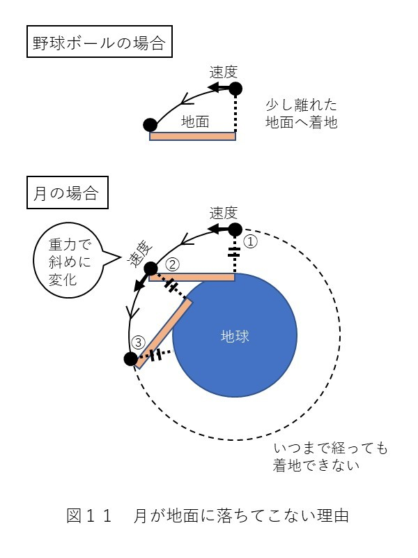
このような真実は、月を浮遊物と見なしていては見つけることができません。月を例外扱いせず、野球のボールと同じ通常の物体と見なしたからこそ、真実を見出せたのです。
以上のように、隠れた真実・真理を見つけるためには、物事を安易に例外扱いしてはいけません。 例外扱いするということは、物事を統一的に理解するのを諦めるということです。つまり、そこで思考停止するということなのです。思考停止してしまっては、隠れた真実・真理を導き出すことなどできません。
このことは、月に限った話ではありません。例えば火星の逆行現象を発見したとしても、「火星は他の星と違って逆行する、例外的な存在なんだ」と考えてしまっては、地動説という真実を導き出すことはできません。またビジネスにおいても、不可解な出来事があったときに、それを例外と決めつけてしまっては背後に潜む真実に気づけません。アンケートと真逆の行動をとる客を見て、「この客は普通とは違う、例外的な客なんだ」と決めつけては、真実を見抜けないのです。
もちろん、どうしても物事を例外扱いせざるを得ないときも存在します。それは、どうやっても物事を統一的に捉えられなかったときです。ですが、そのような事態は、あくまでも限界まで観察や考察を重ねた結果生じるものです。どうにかして不整合の背後に潜む真実・真理をつかもうと努力したものの、上手くいかなかったため、やむを得ず例外扱いするのです。
例外扱いとは不本意な結末として生じるものであり、自分から積極的にするべきものではありません。 安易に「それはそれ、これはこれ」と言って物事を切り分ける姿勢は、見直すべきだと言えるでしょう。
「なぜ」という疑問から真実・真理に辿り着くのに必要な事柄の３つ目は、一見無関係な物事からヒントを得ること です。どういうことか、簡単に説明します。
まず、「なぜ」は頭の中の予測と目の前の現実が不整合を起こすことで生じます。このとき頭の中の予測は、過去に観察から得た知識や法則を基に生み出されます。そして（１）で述べたように、不整合から真実・真理に辿り着くには
の両者を手がかりにする必要があります。
では、真実・真理に至るのに必要なヒントは、この２つだけで十分なのでしょうか？ 実は、そうではありません。更に他の物事を観察し、「なぜ」の追究に必要なヒントを得なければなりません。その際に必要になるのが、今考えている事柄を一見無関係な物事と結びつけることなのです。
例として、「なぜ月は地面に落ちてこないのか」という疑問について見てみましょう。この疑問から「月が地球の周りを等速円運動しているから」という真実に辿り着くためには、
の両者に辻褄の合う説明を見出す必要があります。ですが、この２つの情報だけから「等速円運動」に思い至るのは非常に難しいでしょう。これらに加えて、
のような発想が必要になります。このような発想に辿り着くには、単に月と野球のボールを同じ物体だと見なしているだけでは不十分です。今考えている月の話と、日常生活の中で観察した一見無関係な事柄 （野球のボールの運動）を結びつける必要があるのです。
このことは、他の例でも同様です。例えば、「なぜ火星は逆行するのか」から地動説に辿り着くには、
という２つの情報だけでは不十分です。これらに加え、
のような発想が必要になります（現代人の場合、馬車よりも新幹線や飛行機の方が分かりやすいかも知れません）。地球の話を馬車の等速運動という一見無関係な事柄 と結びつけることで、
「地球は動いていない」
という仮象に陥ってしまった理由や、
「火星が地球から見て奇妙な動きをしているように見える」
理由を理解できるようになるのです。
このように、真実や真理を見つけ出すためには、「今自分が考えている話」と「一見無関係な物事」を結びつけて考える必要があります。 一見無関係な物事が、今解消したいと思っている疑問へのヒントとなり、新たな視点を与えてくれるのです。これは、名探偵が現場で考えに行き詰まり、気分転換として無関係な日常の風景に目を向けているときに解決のヒントを閃くのと同じです（推理物の作品では、そのような場面がよくあります）。
ところで、なぜ一見無関係な物事が真実や真理へのヒントになるのかと、不思議に思う人も多いでしょう。大抵の人は何か疑問を抱いたとき、その疑問と関係ありそうな事柄だけをヒントにしようとします。月に関する疑問を解消したいときに、無関係に見える野球のボールの運動をヒントにしようとする人はあまりいないと思います。
ですが、ある２つの物事が無関係だというのは、そもそも誰が決めたのでしょうか？ それは、他ならぬ今を生きる人間です。 例えば
といったことは、人間が今持っている知識や法則を基に、勝手に決めているだけです。決して、神様が絶対的な決定事項として、それらを無関係と定めたわけではありません。
人間が定める事柄は、絶対的な決まり事ではありません。実際に、人間が過去に「無関係」と定めていた２つの物事が、後の時代になって関係のあるものだと分かることもあります。つまり、２つの物事が「無関係」なのか「関係がある」のかは一義的に決まるものではなく、時代によって流動的に変化するものなのです。
例えば、人類は元々、化学と物理という２つの学問を無関係なものだと考えていました。異種の液体などを混ぜ合わせて別の物質を生み出す化学と、物体の落下などの運動を考察する物理を、全くの別物と捉えていたわけです。
しかし現代では、化学と物理は、非常に関係の深い学問であると考えられています。一見魔法のように見える化学反応が、実際には電子の運動という物理現象であり、物理の法則に従うものだということが分かったからです。
このように、２つの物事の関係性は、時代とともに流動的に変化します。人類が知見を深めるにつれ、今までより多くの物事が知識・法則で結びつけられるようになります。その結果、過去の人々が「無関係」と判断した２つの物事が、後の時代に「関係がある」物事だと判明することもあるのです（逆に、仮象が見破られることで、今まで「関係がある」と思われていた２つが実は「無関係」だったと判明することもあります）。
このことは私達現代人にとっても同じです。私達が２つの物事を無関係と判断するのは、現時点の人類には両者を結びつける知識・法則が無いというだけのことです。 実際には無関係に見える２つの物事にも、私達には見えていない密接な関係が存在する可能性があります。従って、今の私達の持つ知識・法則の範囲だけで
「これは今考えている問題とは無関係だから、問題解決のヒントにはならない」
などと決めつけてはいけません。一見無関係に見える物事が、本当は密接な関係性を持つものであり、「なぜ」を追究する上での大きなヒントになることがあります。それどころか、「なぜ」を追究しきれない原因の大半は、一見無関係に見える物事が人間の盲点になっているからだと言っても過言ではありません。
特にビジネスでは、今自分達が持っている知識・法則の範囲内だけで問題を解決しようとする傾向が強いです。「なぜ」を自分達の持つ知識・法則の範囲内だけで分析し、思いついた要素の範囲内だけで正解を見つけようとするのです。しかしそういった姿勢では、普段の日常生活の中にヒントが転がっていたとしても、
「それとこれとは無関係だ」
と言ってヒントを見落としてしまいます。隠れた真実・真理を見つけるには、今持っている知識・法則だけで「関係がある」「無関係だ」といった判断をしないようにする必要があります。
以上で見てきたように、「なぜ」を通して真実や真理を見つけるためには、次の３つが必要です。
（１）元々正確性の高い知識・法則を有していること
（２）不整合を見過ごさないこと
（特に、例外扱いによって不整合を見過ごさないこと）
（３）一見無関係な物事からヒントを得ること
これらのポイントを踏まえた上で、真実や真理を見つけるまでの一連の流れを整理すると、次のようになります。
【真実や真理を見つけるまでの一連の流れ】
まず自ら物事を観察 したり、他人から話を聞いたりすることで、十分なｎ数に基づいたある程度正確性の高い知識・法則 を獲得する。
そして、獲得した知識・法則を基に予測 を立てながら、物事を（さらに）観察 する。特に他人から知識・法則を教わった場合、それが本当に正しいのかを自分の目で確かめるように観察する。
すると、目の前の現実が、自分の知る知識・法則を基にした予測とは整合しないことに気づく。この不整合が「なぜ」という疑問を生み出す。
ここで、目の前の現実が予測と食い違うことを安易に「例外扱い」で説明しようとせず、 統一的な理解を試みる。その過程で、今考えている問題と関係がありそうな事柄だけでなく、一見無関係に見える物事 からもヒントを得ようとする。
すると、これまで自分に欠けていた新たな視点を得ることができ、自分が今まで陥っていた仮象 を見破れるようになる。その結果、「元々有していた知識・法則の部分的な正確さ」と「目の前の現実」の両者に辻褄の合う説明 を得ることができ、真実・真理 に到達する。
この流れから分かるように、真実・真理を見つける上で重要なのは、考察よりもむしろ観察 です。より具体的には、
という３種類の観察が必要になります（他人から知識や法則を教わる場合、１つ目の観察はあなたの代わりにその人が済ませていることになります）。これらの観察が欠けていると、いくら考察を重ねたところで真実や真理に到達することはできません。
そもそも考察とは、頭の中の知識・法則を結びつけることを指します。 例えば
「地球が動いているように感じないのは、地球が等速運動をしているからではないか」
という考察は、
というふうに知識・法則を結びつけることで行なわれます。このような考察は、観察によって得た知識や法則が無ければ行えません。つまり考察というのは、観察によって得た知識や法則の蓄えが頭の中にあって初めて成立するのです。
従って「なぜ」という疑問から真実や真理を得るためには、まず行なうべきは考察ではなく観察です。十分な知識や法則が脳内に無い状態で、いくら机の上で考察を続けても真実や真理は見えてきません。現場を観察したり、日常の一見無関係に見える事柄を観察したりすることで、考察に必要な知識・法則を十分に収集することがまず必要だと言えるでしょう。
その際に特に重要なのは、必ず自分の目で見て確かめること です。残念なことに、ビジネスでは現場を自分で観察せず、誰かが書類にまとめたデータだけを見て判断を下そうとする場面が多々あります。しかし、このような姿勢では考察に十分な知識・法則を収集することはできません。
書類にまとめられたデータというのは、既に情報が取捨選択されたものです。例えば現場のオペレーターが現地を観察しながら、
「この情報は今回の案件に関係ありそうだから、データにまとめよう」
「これは今回の案件には無関係に見えるから、データからは省こう」
といった取捨選択をした上で、データをまとめているのです。一見すると、無関係に見える情報が省かれたデータというのは、無駄の無い良いもののように思えます。
しかし、現場のオペレーターが「無関係」と感じた情報が、必ずしも本当に無関係とは限りません。本書で既に述べたように、真実や真理へのヒントというのは、一見無関係に見える物事にこそ潜んでいるのです。 紙のデータだけを見て考察をしていては、そういった物事を見落としてしまう可能性があります。本当に真実や真理を追究したいのであれば、必ず自分の五感を使って、感性の限界まで観察を行なうようにしましょう。
現代人の多くが侵されている病気があります。それは「役に立つことしかやらない病」です。この病気は、早い人だと中学生の頃には発症します。学校の授業中に
「先生、それが何の役に立つんですか？」
という質問をし始めるのが、その兆候です（こんなことを書いていますが、私自身もかつてはこの病気に侵されていました）。
この病気にかかった人は、自分が確実に「役に立つ」と感じた物事にしか手を出さなくなります。例えば
「理学や文学は面白そうだけど、役に立たなそうだから学ぶのはやめておこう。それよりも将来役に立ちそうな経営学を学ぼう」
といった判断をするようになります。
「役に立つ／立たない」で物事を判断する姿勢は、一見すると合理的に思えます。しかし、私達人間はこのような目先の効率だけにとらわれるべきではありません。
「役に立つ／立たない」というのは、言い換えると「自分の人生に関係がある／無関係だ」という判断です。ですが、これはあくまでも、現時点で自分の持つ知識・法則に照らした判断です。実際にある物事が自分の人生に関係があるのか無関係なのかは、その時点では判断できません。一見自分の人生に無関係に思える物事が、後になって自分の人生を切り拓くアイディアのヒントになることも多いからです。
斬新なアイディアというのは、予想外の物事をヒントに生まれるものです。一見すると無関係な２つの物事を結びつけることで、ブレイクスルーやイノベーションが生まれることも多々あります。このような斬新な発想は、「（現時点で）役に立つと感じることにしか取り組まない」という姿勢からは生まれません。
もちろん、人間の人生には限りがありますから、自分に無関係だと思えることにむやみやたらと手を出すわけにはいきません。ですが、自分が今「面白い」と感じていることくらいは、目先の効率を度外視して追いかけてみても良いのではないでしょうか？
「面白い」という感情は、新しい知識や法則を吸収するためのモチベーションを人間に与えてくれます。もちろん、身につけた知識や法則はすぐには役に立たないかも知れません。ですが、それらはいずれ自分の人生の大きな糧となる可能性があります。それに人間は、何に対して「面白い」と感じるかが一人ひとり異なります。従って、自分が「面白い」と感じた物事に全力で取り組むことは、自分独自の視点や発想を生み出すもとになります。
私達人間は「役に立つ／立たない」だけでなく、「面白い」という感情も大事にするべきです。現代人は、目先の効率ばかりを求めるのではなく、時には打算の無い好奇心に身を委ねる余裕も持つべきではないでしょうか？
本書を最後まで読んで下さり、ありがとうございました。
２０１９年５月 石山敦之
石山敦之（いしやま あつし）
１９８９年生まれ。神奈川県 私立聖光学院中学・高等学校卒業。慶應義塾大学 理工学部 物理情報工学科卒業。同大学院 理工学研究科 博士前期課程修了。修士（工学）。
現在、科学技術や文化に関して、ブレイクスルーやイノベーションを起こすべく日々勉強中。
２０１９年５月現在、以下の作品をアマゾンで販売しています。もし少しでも気になる作品がありましたら、読んで頂けると嬉しいです。
（１）小説・物語文読解への認識を180°変える本
https://www.amazon.co.jp/dp/B0792XQTYB
（２）論理的に正しい目標達成法
https://www.amazon.co.jp/dp/B07JCCLKS6
（３）「なぜ」の本質：真理を追究するとはどういうことか
https://www.amazon.co.jp/dp/B07RPQ6C54
【英語版】
（１）Scientific Ways to Read Minds of Characters in Novels
https://www.amazon.co.jp/dp/B07DL34YZK